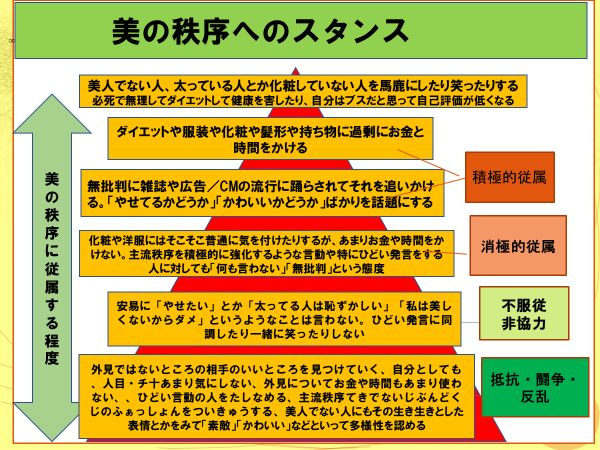

| アドラー心理学で学ぶジェンダー論: 主流秩序の視点からの新しいアプローチ | |
| 伊田広行 | |
| (2018) | |
アドラー心理学で学ぶ
ジェンダー論
主流秩序の視点からの新しいアプローチ
伊田広行
2018年9月 電子書籍版発行
2019年1月 増補・ＰＯＤ書籍版発行
はじめに
本書は、主流秩序の観点をアドラー心理学の一部を使いつつ展開してジェンダーについて学ぶものとなっています。どうジェンダー秩序から自由に生きるかをテーマにしています。
ジェンダー論は、いわゆる「男女平等の主張」だけではありません。その主張が悪いわけではないですが、通常、「こういうものがジェンダー諭というものだろう」というイメージや常識や予想を超える話をします。
見えにくい『ジェンダー秩序』（主流秩序の一部）というものを見ていき、それへの対処力（多様性意識など）を身に着けること、それによる自分の生き方の再検討と再確立を目標とします。そこでは私の従来の主張である「シングル単位論」も重要な視点となります。
興味を持っていただけたら幸いです。
追記：２０１９年１月のＰＯＤ増補版では学生レポートの紹介を追加しました。
関連書【伊田広行著】
『閉塞社会の秘密──主流秩序の囚われ』（アットワークス、2015年）
『はじめて学ぶジェンダー論』（大月書店２００４）
『続 はじめて学ぶジェンダー論』（大月書店２００６）
『スピリチュアル・シングル宣言』（明石書店２００３）
『シングル単位の恋愛論・家族論』（世界思想社１９９８）、
『「まだ結婚しないの？」に答える理論武装』（光文社新書2007年）
『主流秩序社会の実態と対抗――閉塞社会の秘密２ 』（２０１５年、電子書籍）
『いかに生きるかの具体的テーゼ３４０――主流秩序論 ＮＯ３』（2016年、電子書籍）
『こんなひどい社会の中で、それでもちゃんと生きていく方法―――主流秩序論2冊のエッセンス』 （2016年、電子書籍）
『戦争に近づく時代の生き方について―――戦争／ナショナリズム／暴力に対する、非暴力／主流秩序の観点』 （2016年、電子書籍）
「主流秩序と労働―――高賃金、安定の正社員、結婚を目指すような労働運動ではなく」（２０１７年８月発行、電子書籍
『主流秩序概念を学んで見えてきたこと―――学生さんの本NO.１１』
（２０１８年、電子書籍）
『シングル単位思考法でわかる デートＤＶ予防学』（かもがわ出版、2018年12月）
∞∞∞∞∞∞∞∞∞∞∞∞∞∞∞∞∞∞∞
目次
第３章 ジェンダー諭として、「主流秩序論によるアドラー心理学」を使う
主流秩序については別の本でも説明しているのでここでは簡単に書いておきます。
● 主流秩序とは
主流秩序とは、「社会の多数派が持っている価値で人を偏差値的に序列化したもの」（参考:拙著『閉塞社会の秘密』）というものです。といってもわかりにくいですよね。簡単に言えば、「お金があるほうがいいといった 、 皆が信じ込んでいる『こうすれば幸せ』という世間の価値 観 」、 「 これが幸せだよ、勝ち組だよという価値観で人を順位付けしたも の 」といったものです。ここでいう「秩序」（英語ではORDER）とは序列というような意味で、偏差値的に人が真ん中を50として順位づけられているもののことです。
主流秩序の中には、「どの程度の金を持っているかの秩序」「学歴の秩序」、仕事ができるかどうかの「能力主義の秩序」「コミュニケーションがうまい程度の秩序」「女らしい/男らしい人が上というジェンダー秩序、などいろいろあって、そうした各々の 「 サブ秩 序 」が寄り集まって「太い縄」になっているものが「社会全体の主流秩序」です。
●ジェンダー秩序
主流秩序の中のサブ秩序の一つ 、 ジェンダー秩 序 とは、「異性愛で男女二分法、男／女らしくあるのがいいというジェンダーによる秩序」のことです。
色々な内容がありますが、例えば、世間の言う女らしさ、男らしさが強い（それをよいと思って追及している）ほど上位、旧来の性別役割をなぞっているほど上位、女／男らしさが少ないあるいは反逆しているほど下位というものです。
また男らしい/女らしくてモテて恋愛できたり結婚できている方が上の秩序、結婚して標準的・典型的家族像にどれだけ近いかの秩序でもあり、正社員で働き結婚し、子どもがいるという、理想の家族像に近い人ほど上位、そこから外れている程度の大きい人(例えば、子どもなし結婚→正規職事実婚→非正規結婚→非正規事実婚→同棲→離婚→独身→性的マイノリティ)ほど下位といった序列です。
● 美の秩序
主流秩序を理解するために、ジェンダー秩序の一つである「美の秩序」の例で考えましょう 。 美の秩序（ 見 た目秩序 ） とは、「美人、かっこいいか、セクシーかどうかで序列化された見た目の秩序（美の秩序）」のことで、顔、スタイル、服装、ファッション、化粧、髪形（ハゲ）、身長、などでの総合的な見た目で、世間の価値観的に美しいとされている程度が高い人ほど上位、イケている人ほど上位、「ブサイク」「ダサい」とされている人ほど下位といった価値の体系です。
もう少し具体的に説明していきましょう。 この社会では、美しくなりたいと思って頑張っている人がたくさんいます。顔や体型について、化粧、ダイエット、ファッション、整形、フィットネスなどで外見がよくなりたいと思っていますよね。で、いま100人の人がいるとして、社会平均的に見て美しい人から順番に順位をつけて並べるとします。そうすると、上から数えて60番目だったAさんが努力して少し細くなったりきれいになって、上から45番目になったとしたら、そのAさんはうれしいかもしれません。でもそれによって、もともと45番目だった人から59番目だった人は一つずつ順位下がります。順位なので、誰かが上がれば誰かが下がるのです。
これを偏差値的にとらえれば、Aさんが美の序列の偏差値が４７だったけれど、努力して偏差値５４になることがある、しかしそれは皆が美しくなるということではなく、従来美しいとされていたＢさんの評価が下がってしまうようになっているのです。順位、序列、偏差値的関係とはそういうことです。
このような、みんながキレイになりたいと思いがんばる中で 、 美の水準は上がり、皆の美の競争は激化していきま す 。多くの人はダイエットや化粧やファッションなどにとらわれ続け、そこで勝ち組になれない人は自分を否定的に評価することになります。皆が美しくなっていけば、あるＢさんは相対的に順位が下がって「美しくない」ようになるのです。
このような競争的な序列の中で「もっとやせて美しくならないと」とか、「足が太くてファッションセンスもない自分はかわいくない」「美しくなれない自分はダメだ」といった意識にとらわれているのではないでしょうか。このように、人が偏差値で競争させられているものが主流秩序です。なんとなくイメージがわいてきたでしょうか。
●まとめ
今の社会には、その社会において主流と捉えられている価値体系である「主流秩序」というものが存在しています。それは偏差値的に人が順位付けられたもので、上位にいるほど良く、下位にいるほど悪いと思われています。ジェンダー秩序はその中で多くのサブ秩序と絡み合った中心的な秩序の一つです。
その上位のものには羨望や妬み、下位の者には軽蔑や優越感を感じることが多くなっており、多くの人間はこの主流秩序を一つの目安として自分の幸せ／不幸せを実感しています。
●親という主流秩序
主流秩序を簡単に理解するために、親の敷いたレールに沿って生きていることの危険性の話をします。子供が優等生的に親の希望どうりに生きていると親はうれしいです。その顔を見るのがうれしいからさらに子どもは頑張ります。しかしそれだと、親の期待通りでないと親に怒られたり、ほめてもらえなくなり、子供は不幸になります。また自分で考えられなくなります。何がしたいのかわからず、親の言いなりになってうまくいかないとそれを親のせいにする子になることさえあります。
これは世間、主流秩序というものを親が体現し、子供はそれを基準に、その上昇を目指し、それが幸福だ、当然のことだと信じ込んでいる状態と言えます。
しかし皆が一生、勝ち組でい続けられるわけではなく、また常に競争にさらされて疲れることもあり、親の言いなりになることには危険があるといえます。
多くの学生さんが、主流秩序の観点を知って、自分の生い立ちを見直して、親の言いなりになってきたことを反省しています。
以下がその一例です。
|
「親が主流秩序だった」 だが、こうして振り返ってみると、私の人生にとって両親こそが主流秩序であったようにすら感じる。そして、その秩序は私が勝手に感じていたもので、両親にとっては愛情ゆえの秩序で、私はいつでもそれから抜け出せる状態だったのに、この状況になってやっとそれに気づいたように思う。これまでの人生、ほとんどは児童や学生として学校に所属してきた。その大半を両親の思いに従ってきた。両親の考えは間違ったことを言っているわけではなく、私に悪影響を及ぼすわけでもない。だからこそ、私もそれに疑問を持たなかった。だが、それは自分で道を決められない子供だったからこそ両親が手を引いてくれていたのだ。私は、その手を振り払おうともせず、ただついていっただけで、いつのまにか両親の持つ主流秩序に浸っていた。両親の考えにとって、堅実な人生こそが幸せで両親の持つ主流秩序で私もそれに影響されたが、その考えは一度だって強制されたことはない。就職先を決めた時も両親は喜んでくれた。ただ、私が両親の勧める道以外の選択肢を取ろうとしてこなかっただけだ。 私は、大学受験に失敗して浪人したが、成績が伸び悩んでいた時期があった。その時に、父が専門学校のパンフレットとハローワークを無言で机の上に置いていった。私はそれを嫌味とも喝を入れるためとも捉え、不安になりがむしゃらに勉強した。だが、今考えると、父は何も言わなかったのである。父のしたことはただの選択肢の提示であり、私は勝手に見限られたかのような不安感から勉強をしたのだ。両親に従ってこれまでやってきた自分が否定されるようで怖かったのだ。 だが、大学に入って両親の庇護のもとから離れるとずいぶん心持ちが変わった。自堕落になったが同時に自分を見つめなおす機会になった。自分で選び、学び、遊び、働き、考え、自己の確立がなされた。そういう意味では、このだらしない大学生活にも意味はあったのかもしれない。そして、結果として、両親の勧めてきた道をそもそも選べるような状況になくなって、自分の中身を整理して、選び、決定して、やっと私はこの主流秩序から解放されたのである。
|
● 主流秩序・ジェンダー秩序を知った学生さんの感想
◆自分が囚われている主流秩序やジェンダーについて考えて見たとき、たしかに周りの目を気にしたり将来的に大企業に就職することが当たり前で親孝行にもなると考えていた。この考え方自体が主流秩序であり自分が囚われているものだと初めて知った。 ジェンダーと聞くと男性と女性の差別についてのものだというイメージがあったが、結婚、恋愛などいろいろな秩序があり、自分にとって当たり前だと思っていたことがその主流秩序に囚われているのだと思った。
◆「ジェンダー」といえば、やはり男女差別やフェミニズムといった考えがつよい印象でしたが、「彼氏がいないと恥ずかしい」などといった普段悩んでしまう考えも、主流秩序のうちに含まれると知り、衝撃的でした。そして「彼氏がいないと恥ずかしい」という考えを持った私も主流秩序に含まれていると知ることが出来ました。 中学高校時代は、いわゆるカースト上位とよばれる人たちの間で、誰かが誰かと付き合って、そうかと思えば次は、同じ人たちの中で異なる人と付き合っていて、本当に好き同士で付き合ってるのかな？とか彼氏がいないと恥ずかしいという考えで付き合っているのでは？と考えていたことを思い出しました。
◆講義を聞いて、自分の持っている価値観とはいったい何であるのかについて考えさせられた。祖父母や父母に楽をさせてあげたいので、収入が安定しているという理由で公務員を希望していたが、自分のやりたいことは他にあり、社会の価値観にとらわれていることを改めて痛感させられた。
◆大学に来てから不思議に思ったことは、思ったほど単独行動をしている人が少なかったことです。お昼ご飯は友達と一緒に食べて、一緒に講義を受け、同じ授業を登録するというような人が男女共多く感じました。高校まではクラスという共同体に縛られ、友達がいないような人はスクールカーストから外され、いじめを受けるなどというようなことが問題になっていますが、大学に入学してもまだ周りの目や世間の友達が多い方がよいという風潮に囚われた人が多いなと感じ、高校までの学生生活の延長のように思いました。私はあまり周りの目を気にしていないので基本単独行動で授業も一人、お昼ご飯も一人なので親には心配されます。しかし、今の生活でも幸せです。今日の授業で主流秩序という言葉を知り、そのしくみや社会の在り方を学び、私が疑問に思っていたことが解決しました。世間体や周りの目を気にしすぎる今の社会は問題だと思います。
◆思い返してみれば、私は、中学生のころから「サッカー部でレギュラーとらなければ恥ずかしい」だとか、「学校の成績で5番以内に入らないと将来ダメになる」だとか、様々な主流秩序にとらわれえきたことに気がついた。確かに、社会に適応して、一人の『一般人』として生きていくのには大事なことかもしれないし、当時はそれこそ命がけで努力してきたことは事実なので、それは否定したくないし、すべきではないと思う。しかし、そういう『周りの目』だとか、『普通』だとか、典型的な主流秩序にとらわれすぎて、サッカーを始めたときの初心だとか、本当にやりたいことだとかを忘れていたな、と感じた。 これから就活も始まるし、一人の社会人として社会に出て行く者として、もちろん社会の価値観にある程度適応することも大事ではあるけれど、周りに流されず、自分だけの価値観、『芯』というものを持って生きていきたいと感じた。
◆私はSNSをしていないので大学生のInstagram、Twitterは見ていて狂気を感じる時がある。
◆僕が中学生の頃から考えていたこと、言語化できなかったことも含め、大体のことを聞けたのではないかと思います。私は セクシャルマイノリティで、学校や家族との時間の中で感じたことの経験から、今まで日本社会の常識、先生のおっしゃる主流秩序からなる構造について、長く疑問を持って接してきました。そのため、高校の頃では、社会の基盤となる、考えや価値観というのは、言語からくるのだと考えたので、まずは第二言語として英語に非常にのめり込みました。・・・・たくさんの言語を覚え、自分の知らない社会・文化・人間に触れ、自分の知識や経験を増やすことができたらいいな、日本社会での性的マイノリティに対する人権向上に貢献できればいいなと考えています。
◆今自分が悩んでいることそのままなテーマが何度か出てきて、思わずドキッとしてしまいました。私が今自分が囚われているなと感じる主流秩序は、「女性である自分の外見の美醜」「男性の学歴、年収」です。これまでは、自分はこの2つを気にするような人間ではないと思っていたのですが、最近この2つを直視せざるを得ない事態に直面して、とても悩んでいます。また、こんなことで悩んでいる自分がとても嫌で辛いです。この授業を受ける中で、自分なりに今の状態への答えみたいなものを見つけられたらと思っています。
◆ 私は幼い頃から劣等感に襲われて生きていました。自分と同じような歳の子役がテレビに出ていて演技をしていると、親は決まって「この子すごいね」と言ってました。私はそれを聞いて凄く劣等感を抱いていました。そこから私は人に認められるような承認欲求ばかり強い人間になってしまったのかなと思います。人に嫌われないように生きるのが私の全てでしたが、最近になって人に好かれようと行動しても嫌われるパターンが多くなってしまい、素の私を出して好いてもらうほうが私の幸せだと感じるようになりました。とらわれ過ぎないという先生の言葉をもっと早く聞いて置きたかったと感じる講義でした。
◆本日の講義における主流秩序に関して、自分の出身高校が校内における学力至上主義であり理系至上主義だったため、やはり、学歴や就職先といったものの主流秩序に自分が囚われているなと感じました。
◆親の問題や就職問題は、大学に入ってからずっと悩んでいることだったので、興味深く聞いていました。門限はもちろんまだありますし、外泊は禁止です。さらに今まで親の言うとおりに進路を決めて来て、何がしたいのかわからなくなってしまっていました。好きなことはあるのですが、それを仕事には実力不足でできない、現実的じゃないと押し込めて来ました。それにチャレンジすることや、あまり高収入大企業に就職せずに、趣味としてほそぼそと続けることなどを選択肢として考えていこうと思いました。
◆親の敷いたレールというのはすごくよくわかります。私も全く同じような状況で今やりたいことがわかりません。やりたいことがあっても、せっかく親がお金をだしてくれて大学までいれてくれたのにこの道でいいんだろうかと考えてしまいます。主人公が将来のことを考えてはっとするシーンがありますが、私はこれがやりたいということもないので会社にも馴染んでしまう気がします。少し怖いです。
◆大抵の親は子どもに幼稚園(保育園)→小学校→中学校→高校→大学→就職というレールを敷く。大学3回生の私は最近、親、親戚に会うたびに就職活動について聞かれる。私は大学院進学を希望しており、就職活動をするつもりはない。親のみではない、友達にも、「何系に就職したいの？」とか「来年は就活で忙しくなるよね」と言われる。なぜ、大学を卒業したら就職、という考えになるのか。これも一種の主流秩序である。大学院にいってなにをするのか、よく聞かれるが、私は逆に問い返したい。いい企業に就職してなにをしたいのか。この問いに対して半数は、お金を稼ぐため、理想の結婚相手を見つけるため、と答える。自分のやりたいことを活き活きと語れない、そんな仕事に就いたとして、長続きするのだろうか。
◆親の敷いたレールの感想； 主人公の姿が自分と似ている気がした。親の期待に応えたい、と強く感じることは無いが、半ば親の言いなりで中学受験し、成績が悪ければ学費がどうこうと強く言われ、いい大学なら学費を払ってあげると、理想の人生とだんだんズレながら生きている自分に薄々気がついた。誰だってそんなものだろうと思い込んでいたが、結局それも親が自分の人生を決めてしまっている証拠になっているのだと思う。
●ダイエットしないといけないという主流秩序
美の秩序の一つが「痩せないといけない」「痩せているのがいい」という考えによる細い人が上、太っている人が下というダイエット序列です。
日本社会は今、特にこの圧力が強くなっており、ここ数年、痩せすぎの人が多くなって問題になっています。統計では、20代女性のエネルギー平均摂取量が長期的に低下傾向となっています。ＢＭＩ指数による１８以下が「痩せすぎ」なのですが、今、それが８人に１人程度になっており、１９８０年以降で最も多い水準となっています（厚生労働省の国民健康・栄養調査より）。
働く女性のための「まるのうち保健室」が20～30代の働く女性1000名以上の体のデータをまとめ、毎年「働き女子白書」として発表していますが、それによると、働く女性が1日に必要とするエネルギーは、約1800〜2000kcal（20〜30代女性の場合）であるのに対して、実際にとっているのは1479kcalでした。食糧難だった終戦直後を下回る数値で、ビタミンやミネラルなど必要な栄養素が十分に摂れていないこともわかりました。これらは栄養失調による貧血や骨密度の低下、月経の乱れ、慢性的な睡眠負債をもたらします。
やせすぎは、若い女性がホルモンバランスを崩したり、高齢者が低栄養になったりして健康上問題が出る恐れもあるといわれていますし、こうした女性が妊娠後に体重を増やしても、赤ちゃんの体重増加にはつながりにくく、やはり低出生体重児のリスクが高まります。
ところが健康的な標準体重の人でも主観的には「自分はまだ太りすぎ」「もっとやせたい」と思っている人が多くなっています。「やせ」の女性を年代別に見ると、２０代が最も高くなっています。
注）ＢＭＩ：体重（キロ）を身長（メートル）で２回割った体格指数「ＢＭＩ」が１８・５未満を「やせ」、２５以上を「肥満」と定義しています。女性たちの理想となるタレントやモデルは痩せすぎの人が多い状況です。国際的にはモデルのやせ過ぎに警鐘が鳴らされており、やせすぎのモデルは使わない方向が一部で志向されていますが、いまだその実態は十分ではありません。
そのほか、美の秩序を強化しているものとして、雑誌・広告や動画などのイメージがあります。雑誌・広告の写真の多くは、修正されており、実際の体とは異なっていますが、ふつうの人は、その雑誌のイメージを基準に、「こんなスタイルになりたいけど自分はそうではなく太っていてだめだ」と自己否定的になっています。
こうした修正の実際がよくわかる動画があるのでぜひ見てください。ネットで『フォトショップでの修正過程を全部お見せします【動画】』を検索すると３分ほどの短い動画が見れます。手足を伸ばしたり、一部を細くしたりする加工のプロセスをみせてくれます。いかにイメージが作られているかがわかるものです。
その他、ネットで「写真修正」「写真加工」などで検索するといろいろ雑誌などで過剰な修正が行われている証拠写真が見られます。
●4か国調査に見る、日本の若者の特徴
日・米・中・韓の高校生の意識の比較調査（2017年）では、太っていると思っている人が日本は他国より多いこと、自己肯定感の低い人が多いことが明らかになりました。これを見ても、日本ではほかの国以上に痩せないとダメだという圧力があることがみてとれます。
参考資料
◆日本の高校生は人間関係が希薄で自己評価が低い...日・米・中・韓の高校生調査
日本青少年研究所、「高校生の心と体の健康に関する調査〜日本・アメリカ・中国・韓国の比較〜」
自分がどう感じるかという自分の中の基準より、他人の基準や一般的に流布されている「痩せているのがよい、きれい」という主流秩序にとらわれていることがわかります。米国では肥満の人でも訳半分が自分は普通だとおもっています。
ここでは、主流秩序諭をアドラー心理学をつかって深めたいとおもいます。これは、アドラー心理学についての理解自体を深めるという側面も持っています。アドラー心理学の本だけを読んでいても、それを実際の生活に使えるところまで消化している人は少ないのではないでしょうか。主流秩序の理解とあわせることでこそ、アドラー心理学でいいたいことが実践的に理解できるとおもいます。
アドラー心理学では、健全な意識としての 「 優越性の追 求 」というものがあります。自分が成長していくという姿勢において、原動力となる「健全な劣等感」はよいものとします。
しかし、よくないコンプレックスとして「優越コンプレックス」と 「劣等コンプレックス」 があるといいます。
それは、主流秩序を前提に、その基準で自分はダメと思い、「秩序の上位者」をうらやみ、よくない劣等感にとらわれてうつうつとしているものが「劣等コンプレックス」というものだと理解できます。また、「主流秩序の下」に対しての優越感、差別言動、比較でしか自分を確認できないといった意識が「優越コンプレックス」だと理解できます。
それらには様々なマイナス作用があるので以下、もう少し詳しく主流秩序とつなげて整理します。
●優越コンプレックス
「 優越コンプレックス 」 とは、「学歴や肩書、ブランド物や昔の輝き、手柄」などにしがみついて自慢することです。また「主流秩序の上位にいくことが成功だ」という意識にとらわれて必死になっている状態も優越コンプレックスにとらわれた状態です。これらは、他者からどうみられているかにとらわれていることといえます。
これに絡むのが 、 他者より自分が上だ、優れているということで自分がうれしくなるという精神の在り 方 です。アドラーはこれを 「 価値低減傾 向 」と名付けましたが、少し日本語ではわかりにくいので、私は意訳して " 他人貶め志 向 "とよぶことにしました。
「自分は強い、素晴らしい、勝っている」という感覚で他者批判ができて 、 相手がだめであればだめであるだけ、自分が上と感じたり幸せに感じられ る というものです。これも他者があってこその感覚です。ときには「病気、弱さや不幸」を使って、「自分は特異だ」といって相手の同情を買って優位に立つことも含みます。
とにかくいろんな意味で、人より優位にたちたいという比較による幸福志向です。こういう優越コンプレックスにとらわれている人は 、 人を差別したり、馬鹿にしたり、見下すことで自分の存在意義を感じられ る のであり、その前提には主流秩序があるというわけです。
こうした自分の強さ・優越性を誇示することにこだわるのは、実は、第一に「強く主流秩序というものにとらわれている」ということがあり、第二に「自分に、主流秩序からはなれた、独自の本当の価値がある」と思えていないからといえます。
ジェンダー秩序で考えると、ジェンダー秩序を正しいもの、不変で強固なもの、一言でいうと前提とみて、それに適応し、その上位に行って優越感を感じるというものです。もっと具体的には、女ジェンダーの序列で上位に行って、「私は美しい」「女の勝ち組だ」と思い皆からもそのように褒められてうれしくなるという状態になっているということです。さらに、ジェンダー秩序の下（ＬＧＢＴ，女らしくないひと、美人じゃないひと、ファッションセンスが良くない人、器量がよくないひとなど）を馬鹿にしたり同情したりしつつ、優越感をもってしまい、そのことでしか、自分の幸せを確認できないという状態になっているということです。この状態は「ジェンダーにとらわれて不自由になっている」と表現できます。
● 劣等コンプレックス
次に、「劣等コンプレックス」とは、まずは一次的には、主流秩序を基準／前提として、他人と自分を比較し て 自分はダメだと思うこ と であり、さらに二次的には 、 人と比較して自分はダメと思っ て 前向きな行動をしない選択をす る ことです。
アドラー心理学では、本当は人はいろいろなことができるのに、言い訳（過去のことを原因とすることが多い）を作って逃げている場合が多いと見ます。
劣等コンプレックスはその典型で、自分の「ダメなところ」を理由として それがあるから「自分は・・ができない」と言って行動から逃げます。これを本当は因果関係がないのに、果関係があるかのようにいうので、 「 見かけの因果 律 」と言います。
「ＡだからＢ」といって、自分の逃げを肯定しているとみなすのです。それは無意識の「隠れた目的」に従っているとも言えます。 「 Only I f ( もしも欠点を克服した ら) I' m o k 」といって、結局、その「欠点があるから」といって自己肯定感を持てなくなり、前向きに動くことから逃げるという状態です。
まとめると 、 劣等コンプレックスは 、 見かけの因果律を立てて、人生の課題から逃げようとしていることといえます。
主流秩序論で言えば、Ａ「主流秩序は変わらない（しかたない、強固にある）」だからＢ「主流秩序に合わせるしかない」というような、現状追認や主流秩序の上位（強いもの）に服従の姿勢になることです。
またジェンダー秩序としては、今のジェンダーがあるから、それは変わらないから男は異性愛男性として男らしく生きないとダメ、女は異性愛女性として女らしく生きないとダメというように思うことです。
でも本当は性の在り方は多様で何が良いとか優れているといったものではないのです。ジェンダー秩序という幻想を疑えばそう思えます。しかしジェンダー秩序を強固で、正しいもの／唯一のものと思えば、秩序下位の性的マイノリティを、よくないもの、例外、ダメなもの、嫌ったり差別してもいいもの、同情とか蔑視の対象とみなしてしまいます。
● どうしたらいか
こうした把握から出てくる指針は、主流秩序にとらわれすぎて、不要な劣等感や優越感を持つことをやめましょうということになります。主流秩序を基準に人と比較するのでなく、主流秩序とは別基準で、自分らしさを見つけて自己肯定感を持ちましょうとなります。
次に、行動しないいいわけをしていたことに対しては、「実はＡとＢはつながっていないのだから、いいわけせずに行動しましょう」となります。それが「幸せになるための勇気」です。 「 Only I f ( もしも欠点を克服した ら) I' m o k 」というのでなく、 「 Even I f （欠点があっ てもなお） I' m o k とする勇気」です。言い換えれば、主流秩序にとらわれずに自分のすべきことを行動する勇気です。
● 不幸／幸せと競争と成長
以上の話は、 「 幸福感、不幸観 」 にも関係しています。アドラーが言うことに主流秩序の観点を付け加えてまとめると以下のようになります。
主流秩序を批判的に見ることができずに、前提としてしまう人は、主流秩序の上位、すなわち、もっといい家に生まれたかった、もっと美人に生まれたかったなどいう思いにとらわれつづけ、自己否定感をもち、それを言い訳に不幸を嘆くだけになります。
しかし主流秩序を批判的にみることができると、主流秩序の上昇にとらわれる必要がない、主流秩序の上位にいかなくても幸せになれると気づき、人によっては本当にそう思えます。それは主流秩序の上位というエリートや勝ち組でなくてもいいという視点です。その意味で 「 普通である勇 気 」をもてばいいのだとなります。これは主流秩序から離脱できる観点ゆえの感覚です。
「普通である勇気」を「主流秩序の序列の真ん中あたりでいい」「あまり上ばかり見ず分相応に中ぐらいである現状で満足する」というように理解するのは、主流秩序にとらわれたままの考えであるので、まったく間違っています。
この考えに至るためには、、主流秩序を前提にその上にいく努力・競争がいいという思い込みじたいを相対化する必要があります。これ は 競争と成長を区別す る ということです。
競争には、全体の水準が上がるとか、個々人が頑張る気になりやすいというメリットはあります。しかし主流秩序は定義からして偏差値的序列ですから、誰かが上に行けば誰かが下がりますし、皆が幸せにはなれません。皆が東大には行けないし、皆が正社員にはなれないし、皆が美人にはなれないのです。必ず相対的に、誰かが美人じゃないといわれます。
しかも競争水準自体が強化され、半永久的に努力し続けるという圧力にさらされ続けることになります。それは時には過労による疾患や、過労死などをもたらします。ですから勝ち組になるしか幸福になる道はないというおもいは、ほんの一部の人しか幸福にしません。
それに対して、主流秩序を批判的にとらえて、その上位を目指す競争から降りて 、 自分自身の成 長 という観点で幸せや生きがいを見つけよう、という視点を持てば、かなりの人が幸福になれます。
少なくとも主流秩序のなかで勝てないひと（弱者）や種の価値に共鳴できない人にとっては、勝ち組的な成功とは違う幸福を手に入れられます。
競争のメリットは 、 競争する相手は他者でなく過去の自分にす る という形で利用すればいいでしょう。「人に追いぬかれてはいけない、ほかの人が幸福になってはいけない」と考える必要はないのです。
競争でしか、成長（優越性追求）できないし、競争の勝利しか幸福ではないと思うのが間違 い なのです。成長の視点は、比較せず、競争せず、自分自身の成長を目指すとい う ことです。偏差値的な席の取り合いではなく、他者との比較／勝ち負けではなく、他人は関係なくマイペースで、自分の課題に取り組み前に進んでいくというイメージです。
こういう幸福感を持てれば人生・生き方は劇的に変わってきます。当たり前に金儲けや学歴追及や見かけやジェンダーにこだわってきた生き方が見直せます。何にこだわっていたんだろうと目が覚めます。
● 質問に答える
こうした話を聞くと、「会社（人）がほかの会社（人）と競争しないと成長はないと思う」というような反応がよくかえってきます。それには以下のように答えたいと思います。
競争のメリットはありますが、マイナスもあるので、そこも考えて、より大きな枠で「成長自体を最終目標にしない」で、幸福の意味自体を大きく見直していきましょうという提起をしているのです。従来の思考の前提を疑い、狭い成長ではない、いい調和としての幸福を考えてください。具体的には、環境問題や大量生産大量消費や過労による病気や貧富の格差なども含めた大きな解決としての会社や個人のありかたを考えましょうという話です。競争だけではこれらの問題は可決しませんよ。と。
＊＊＊
ま た 「顧問の先生に認められたくて必死に練習していた。尊敬する人についていくこと、それによって成長するのはいいのではないか？体罰的なことも含めて熱心に指導してもらったことは私の財産になっている」というような意見もありました。
これには次のように答えたいと思います。
実際にそういう体験をしたのでそう思うのはわかりますが、そこには論理の飛躍や「話に入っていないもの」があります。自分が頑張った結果、いろいろなものを得られたというのはあるでしょう。しかしそれは顧問の先生に強く導かれることや体罰的な熱血指導だけでしか得られないとは言えません。
また人生において顧問の先生の指導のようなものがいつもあるとは限りません。「誰かの言うことを聞いていて成長する」「顧問に認められたい」というのは他人依存の面（承認欲求依存）があり、今後大人になっていくと使えない場合が多くなります。基準が顧問というのは、基準がなくなるとどうなるのでしょうか。人生においては、答えを知っている人がいつも導くということなどありえないのです。ちゃんと生きていくには自分で考えないといけないことがたくさんあります。
そもそも「成長」があればいいということもできません。他の面を考えないといけないのです。スポーツで勝つとか、受験勉強でいい点をとるというそれだけに絞った単純なことでは、そこにすでに「答え」があり、それだけが目標なのでいいでしょうが、人生はそんなに単純で甘いものではありません。主流秩序のマイナス面があることを意識するとはそういうことです。
つまり主流秩序の上位だけを目標にして生きるというのは、簡単でいいのですが、実はそこにはマイナスがあるからそれだけを目標にしていてはだめであり、だからこそ難しいのです。
そういうことも含めた話をしているので「顧問の先生に指導されて成長したからよかった」だけではだめなのです。
教育で目指されるべきことは、自立して自分で目標を設定し、自分で考えていく人間になれるようになることです。しかし、単純な動物は本脳だけで動いたり、命令だけに従います。顧問の先生に導かれるだけでは危険だというのはそういうことも含んでいるのです。
こうした点も含めてまとめたものが以下の図です。
● ほかの人の幸福に寄与できるという幸福
二者択一とか椅子取りゲームでないということであれば、自分の成長や幸せ追及によってほかの人を幸せにするということもあり得るのだと見えてきます。このように、自分の幸せと、社会問題の解決のバランスを考えていけるのです
ここでいう社会問題とは、主流秩序ゆえのマイナス点である以下のようなことです。
|
主流秩序のマイナス点 |
|
１：多様性の阻害（画一化、主流秩序で評価されない能力が認められない） ２：格差による下位者の苦しみ（皆がしあわせになれない、病気になる人、自己肯定感の低さ、不幸感覚、差別を容認することになる） 3：皆が競争に巻き込まれる ４：人々を思考させなくする |
他の人を利するように、自分が前進することができるということが分かるかどうかは、生き方を左右する大きな分かれ目です。自分の成長が他者を利するという道があるのですが、それが見えない人には「そんなのタテマエだ」、としか思えません。
でも、タテマエでなく本当に 、 自分の幸せには、誰かの不幸は必要な い のです。こうした世界観を持つことができることを知ってほしい、というのがアドラー心理学ですし主流秩序論です。
勉強も受験勉強的に、自分個人の主流秩序の上昇（競争で上に行く）のためだけに勉強する人は空しくなりやすいです。そこから離れれば、学びは本来は楽しいものだと思い出します。そしてその学んだことを人のために使っていけます。そうなっていない人が多いですが、学びというものは、勝ち負けの道具とするだけではないということを知ってほしいと思います。
大学での講義も単位のためだけなら、主流秩序的なインセンティブで学んでいることになります。しかし単位が得られなくても、自分にとって学ぶ意味があると思えれば、楽しく学べるのです。その感覚が分かる人は幸せですし、わからない人は不幸です。大学を出てからも、本を読んだり学んだりする楽しみを持ち続けてほしいと思います。
世界を芥川龍之介「蜘蛛の糸」のような世界ととらえるのでなく、そうした主流秩序的な現実という側面が厳然としてありますが、それでもそれだけではないし、そういう「人を蹴落とすしか幸せになれない」ということはないと知ることができればいいなと思います。
そうやって主流秩序に沿って競争主義的に生きている人が多いのは事実ですが、それはあくま で 主流の現 実 というだけです。 「 傍 流 」はいろいろあるのです。あなたには別の選択肢もあるのです。主流秩序が非常に強い「中心的なところ」だけでなく、主流秩序の影響が弱い「辺境」がありうるのです。「異物」が存在できる余地が、この社会の端っこの方にたくさんあるのです。主流秩序から離れて生きるのは無理というのは、「見かけの因果律」による逃げの思考でしかありません。
主流秩序からの離脱は、この「幸せになるには競争＝成功しかない」の考えから離れることによって悪徳できます。
● 承認欲求について
「世間・社会・他の人から注目されたい、認められたい」とい う 承認欲 求 の問題も、アドラー心理学と主流秩序諭で整理していきましょう。
「承認欲求はあって当たり前、誰でもある」といって思考停止している人が多すぎます。しかしよく考えると、あって当たり前ではありません。
承認欲求というものを主流秩序の観点で考えると、主流秩序を前提に、それにとらわれ、その上に行きたい、主流秩序の価値観でよいと認められる点で認められたいということだと理解できます 。 承認欲求は主流秩序に適応することから生じている欲 求 ともいえます。主流秩序的に評価されたいという考えにとらわれるのをやめればいいのに、それが見えていない状態です。
承認欲求にとらわれていることの危険性は、他者（社会）から評価されたい／注目されたい（世界の中心にいたい）が自分の行動原理になって、適切な行動をとれず、ゆがんだ問題行動をとってしまう点です。
たとえば賞罰教育（アメとムチ）で育つと、承認（褒められること）がないと動かないというようになる危険があります。自分にとって必要な行動は、誰かが見ていても見ていなくても、ほめてくれなくてもするべきですが、それができなくなります。判断基準が他者（主流秩序）の評価になるので、そうなります。賞罰教育の弊害というものは、承認欲求にとらわれた状態ゆえの結果です。
● 承認欲求から離れたら
承認欲求の正体が分かったなら、そこからでてくる対応策は、人（他人、社会、主流秩序）の承認でなく、自分の中の基準で生きていけるようになりましょう、ということになります。
もう少し具体的にいうと 、 他者・主流秩序からの承認、つまり「金儲け、地位上昇、名声、ありがとう」といった報酬を求めずに、ただ、自分がしたいことをすればい い ということです。人目を気にして自分の言動を決めるなということです 。 他者は自分の期待を満たすために生きているわけではないことを確認しましょう。他者があなたの基準（主人）ではなく、あなた自身があなたの主人です。自分のことは自分で決めるという自己決定が大事となってきます。
ジェンダー秩序でいえば、人目を気にして化粧しないといけないと思い込むとか、世間の目を気にして、「いい嫁・母に見られるように無理する」というのをやめることです。夫が妻に褒めてほしいと思って家事をして「俺は他の夫に比べてやっているから感謝しろよ」と求めるのは、承認欲求にとらわれてしまった態度です。妻が感謝を言ってくれなくてもシングル単位的に家事をして当然なのです。「感謝してくれないなら家事をしない」なんてもってのほかです。
じ
「 だれも見ていなくてもＯＫ。自分が知っていれ ば」 という感覚を持てるようになりましょう。なかなかむつかしいですが、その方向をめざしましょう。それは自分の心を安定させるための道でもあります。相手からの感謝や評価を期待して動くのをやめ、自分の基準で動けば、人が何を言っても、見ていても見ていなくても関係ないと思えて、心の安定につながります。
テレビでＩＴ関係の人や芸能人・スポーツ選手が大儲けしている／豪邸に住んでいる／高価なものを身に着けているのを見てうらやましがるとか、ＳＮＳでのフォロワー数／「いいね」の数などの評価を求めるなど、「承認欲求は当然」みたいな感覚がほんとうに多くなっていますが、それはゆがんでいます。主流秩序にとらわれた感覚に過ぎません。
空気のような「評価」を求めてインスタ映えする写真を撮ることに躍起になり、「他人に、自分は幸せですよーと思わせるよう無理する」ようなことのむなしさを、あらためて確認しましょう。「私が本当に求めるものは何か」という問いをちゃんと自分に突きつけましょう。それが自分のためです。
こうした全体を理解することで、アドラー心理学の 「 嫌われる勇 気 」という言い方も深く理解できます。
● 「ギブ・アンド・テイク」は主流秩序の考え
アドラー心理学では、人間関係は、「ギブ・アンド・テイク」ではなく、「ギブ・アンド・ギブ」でうまくいきますよとも言います。これも、主流秩序とつなげて理解することでその意味がよくわかります。
人間社会を分断としてとらえ、人間関係は「勝つか負けるか、利害対立、駆け引き、市場取引」としかとらえられていない人、つまり社会を偏差値的な上下関係で序列としてとらえていると、誰かの得はだれかの損だし、こっちが一方的に「与える」のは「意味がないこと／損なこと」となります。
勝つとか儲けるのが（相手から搾取することさえも）いいことなのです。戦争で勝つのもいいことだし、経済戦争で勝つのもいいことと思っています。自分の会社が他社より儲かるのがいいと思っていますし、学業でも仕事でも外見でも年収でも偏差値的に自分が上位に行くのがいい、つまり出世はいいこと、高収入になるのはいいこと、美人になるのはいいことと信じ込み、そこを疑っていません。
そういう人は、ほかの人のためにお金にならないことをすることや勝たないことや、儲けないで与えること、見返りがないこと、感謝されないことなどを「損だ」と思ってしまいます。見返りがないと動きません。承認してほしい（承認の表れとしての金銭等があること）という「テイク」にとらわれてしか「ギブ」ができない状態になっています。
よく「会社は慈善事業じゃない」「こっちも商売ですから」「ボランティアじゃないですから」「生活がありますから（だからお金をもらわないと）」という人がいますが、そういう人は市場や主流秩序を絶対的前提にしてしまって思考がとまっています。
社会をよくするような活動とか、人のために無償で行うような活動をしていない人はたくさんいます。皆、「ギブ・アンド・テイク」の考えにとらわれているのです。
恋愛や結婚、友人関係でさえ、そうした考えで行っている人が実はかなりいます。
恋人に「こっちが・・してあげたんだからあなたも・・してくれて当然でしょ」「恋人なら‥してくれて当然でしょ」というように思っている人がいます。結婚相手を「収入や学歴や会社名（肩書）や外見」といった主流秩序的な側面で価値の高い人を選ぶ人がいます。それはテイクがあって当然という基準での相手選びです。友人を「勉強やスクールカーストやスポーツや情報や出世」などに有利になるという観点で選ぶ人もいます。それもテイクがあって当然という基準での友人選びです。
● 「ギブ・アンド・ギブ」は、主流秩序から離れる感覚
人間関係は、「ギブ・アンド・テイク」ではなく、「ギブ・アンド・ギブ」でうまくいくというのは、上記した「承認欲求にとらわれなくなるといいですよ」という話です。
人間関係を、「ギブ・アンド・ギブ」でとらえていくとは 、 相手からの見返りを期待せずに、「自分がしたいこと（すべきこと）をする」という気持ちよさに目覚めるこ と です。
これは、主流秩序にとらわれているひとにはわからない感覚ですが、自分の心の中を見つめて、主流秩序的な上昇だけが自分の求めているもんじゃない、と思える人には見えてくるものです。あなたはどうでしょうか。
結婚相手は絶対に主流秩序の上位でないとだめですか。友達は自分が得するような「主流秩序の上位の人」人じゃないとダメですか。「主流秩序の下のほうの人」が友達じゃだめですか。出世やお金儲けは絶対で、ボランティアは無駄ですか 。 他人が困っているときに、時間やお金を費やして関わるのは馬鹿だと思いますか。人が誰かにいじめられて（カツアゲされて／パワハラ・セクハラされて／痴漢されて／差別発言にさらされて）いても、とばっちりがこっちに来ないように、巻き込まれるのが嫌で見て見ぬ振りをするのが当然ですか。
こうした問いに立ち止まって本気で自分を見つめなおすタイプの人と、考えずにスルーしてしまう人がいます。あなたはどちらでしょうか。
そして、主流秩序的な価値観に疑問を持って、「ギブ・アンド・ギブ」という言葉を聞いて、ピンとくる人なら、「そんなの理想主義だ」といってスルーする道は取らないはずです 。 アドラー心理学を学ぶというなら、そこまで自分を問わないと小手先の理解と利用に過ぎなくなってしまいま す 。
「自分がしたいからするんだ！見返りを求めてするんじゃないんだ」という感覚に至れば、いろんなものが新しく見えてきます。人の喜びが自分の利益に感じられます。お金という見返りが重要でなくなります。「ありがとう」「金銭的報酬」を期待しないという道です。
これが見えてこそ、人間関係はかなり変わってきます。たとえば、ジェンダーにからめるならば、ＤＶは『相手をこっちの思うように支配すること＝テイクを求めること』ですから、「テイク」を期待しなければ支配でなくなります。
「こっちの期待通りのものが返ってこない」という怒りがわかなくなります。相手がいてくれるだけで幸せとおもえてきます。感謝できますが、相手の感謝を求めなくなります。つまりＤＶをしなくなります。ＤＶしなくなりためには、このように、ＤＶをもたらしていた考えを変えていくことが重要なのです。
美人美男子、勝ち組系男女だけを恋人や結婚相手に選ぶかという点も、「ギブアンドテイク」をやめれば変わってきますよね。ギブしたいと思う相手の「何か大事なもの」を見つけていければパートナー選びは変わります。
無償で家事や子育てや介護をするという行為についても、「はっきりとした世間の評価（わかりやすく言えば金銭）がない」からしんどくなる人がいます。ボランティア活動や社会をよくする社会活動、身近な人の相談や援助にかかわる活動なども「無駄だ」「偽善だ」「そんなことをする暇はない」「私はそんなに人間出来ていない」と言って逃げる人が多いですよね。
すべて「ギブ・アンド・ギブ」（脱・承認欲求）が分からずに「ギブ・アンド・テイク」でしかものを見れていない結果です。
● 感謝を求めないが感謝する
「ギブ・アンド・ギブ」や「脱・承認欲求」において、「ありがとうという感謝を求めない」とは言いましたが、それは感謝しないということではありません。ギブするのですからこっちからは積極的に感謝すればいいのです。
よく間違われるのは、感謝と「ほめること」の混同です。「感謝する」ということと同じようにポジティブなこととして、「子供をたたいたり、しかってばかりで育てると委縮するから誉めて育てるべきだ」という意見をとなえる人がいますが、両者は異なったものです。
簡単に言えば、感謝は見返りを求めないものですが、「ほめること」は見返りを求めがちなのです。もちろんケース・文脈によって事情は異なるので絶対的にとらえるというより、本質的な意味でとらえてください。
感謝でも見返りを求めたらだめですし、ほめることも見返りを求めないならいいのです。
しかし先に「賞罰教育の危険性」で指摘したように、「ほめること」はしばしば「叱ること」とセットで「親や先生や世間の基準」に沿っていると褒める、そうでないと叱るという「アメとムチ」的な操作・誘導・コントロールとなっていきます。ですからそうしたコントロールにつながる「ほめる」はやめようといっているのです。
つまり、「ほめる」ということにも２種類があり、無条件に親などから存在を肯定されるような、「見返りを求めずに与える」という意味での「ほめる言動」は「ギブ・アンド・ギブ」にのっとったものです。
それに対して、主流秩序に沿って上昇・適応することを「ほめる」のは、ギブ・アンド・テイクにのっとっての、勝ち組へ誘導するコントロールであり、よくないものといえます。
主流秩序を絶対視するものによる、上から目線の「ほめる」「えらいねー」「主流秩序の上に行ってえらい」でなく、主流秩序の上昇とは別基準で、「ありがとう」、「応援するよ」「がんばれー」「すごいな」「いいね」「尊敬するなー」「かっこいいね」「誇らしいよ」「うれしいよ」といった言動は「相手に自己肯定感・貢献感を持てるようにする言葉かけ」です。
アドラーはそういう意味で 「 勇気づ け 」といっています。それは決して、「主流秩序の上昇を頑張らせるような勇気づけ」ではないのです。
＊＊＊
「嫌われる勇気」「ふつうである勇気」「課題の分離」「優越コンプレックス」「ギブ・アンド・ギブ」「承認欲求」「成功、成長、幸福」などの言葉はアドラー心理学の本に出てきますが、それらを読んでいても、主流秩序論/シングル単位論とつなげて理解している人はほとんどいません。しかしつなげてこそ深く、正しく理解できると思います。
本書を読んでアドラーの言葉も深く理解できたのではないでしょうか。いかがですか？
＊＊＊＊＊＊＊＊＊＊＊＊＊＊＊＊＊＊＊＊＊＊＊
コラム 学生さんの感想文
● 主流秩序へのとらわれ ＳＮＳと承認欲求
1 日を振り返る投稿の中で自分たちの楽しそうにしている写真を載せて、楽しかったと感想を書いて無意識のうちに自慢をしていた。
振り返ってみると、自分はこんな可愛い子やかっこいい子と友達なのだ・こんな場所を知っているのだ・充実した生活を送っているのだ等といった主流秩序にとらわれたアピール
他の人が自分と比べてどのような生活をしているのかも気にな り SN S をチェック
インスタグラムに載せるためにオシャレな場所に行ったり、インパクトのある食べ物を写真に撮ったりするようになっていた 。
なかには、「どうしよう」「もう無理」などと人が気になるような内容のツイートをして気を引いたり心配してもらったりするの も SN S にはある。
他人の反応も気になる。フォロワー数を始め、いいねやコメントがたくさんくると人気者になったように錯覚し、逆に少ないと恥ずかしく思うな ど SN S の反応に対する通知に一喜一憂するようになった
他人 の SN S が褒められているのを見て「私も同じように認められたい」「羨ましがられたい」と感じて真似をすることも。
幸せな生活を自慢することがステータスになっているし、楽しむこと自体でなく 、 SN S に投稿するために外出するのでは、本末転倒 。 SN S に振り回されていることに気付く 。
またときには本当の生活とは違う面を出している虚像の面さえある。自分が本当に幸せな ら SN S に書き込む必要ないという先生の指摘にはハッとさせられた。
誰かに評価されてもされなくてもその日１日自分が幸せだったことに変わりはないということを意識して、周りの評価は気にせず に SN S を適度に楽しみたい。
＊＊＊＊
コラム アドラー心理学を主流秩序とつなげて学んだ学生さんの感想
●私は褒められるのが大好きだ。承認欲求と聞いてその塊だと思った。高校で野球部のマネージャーをしていた時、監督に気を使いまくっていた。みなからありがとうという言葉をいただくために動いていた。今思えば、マネージャーなんかになりたくなかった。
●私はなんでも割と褒められて育って来た子だった。今の年になって、自分で判断がつかないことが多くて、周りに相談しないと生きていけないタイプになっている。
●自分は承認欲求が強いと思う。マネージャーの時、自分自身好きな仕事はいいが、掃除など自分が好きではない仕事は見られていないときにはあまりやっていない気がする。
●人を見下したことがありました。必要以上に、必要もないのに、冷たく当たったことがありました。とてもすっきりしました。優越感がありました。
人に見下されたことがありました。必要以上に、必要もないのに、冷たく当たられたことがありました。わけがわかりませんでした。とても悲しく感じました。
私は自分のために誰かを傷つけた（かもしれない）。誰かは自分のために誰かを傷つけた（かもしれない）。
全部思い込みかもしれない。結局すべては自分の中だ。私が傷つけたと思った彼は別に何とも思わなかったかもしれない。私に何かを言った彼は、特に何の意図もなく普通にしゃべっただけなのかもしれない。わかっていることは、私は勝手に優越感をもって、勝手に悲しんだということだけだ。
伊田コメント→ 自分の加担性を見つめる勇気はいいと思います。で、次は？じぶんをどう変えるかでしょう。その為に「主流秩序の連立方程式」を考えて、自分なりに、主流秩序にどう向かうか、自分の生き方を作っていってください。いまのところにとどまっては、主流秩序に消極的に加担しているだけなのではないでしょうか。
●課題の分離について、私自身も、大学を自分のためでなく、親のために決めてしまい、受験に失敗したときに親のせいにしてしまいました。大学受験は親の課題でなく、自分の課題だったんだと思います。
●競争には良い面があり、勝つと嬉しい。競争がないと味気ない社会になるように思う。
●中学の時、友達に嫌われたくなくてよく世話を焼いたことがある。これも承認欲求かなと思った。
●妹ができて、（親がそっちに向くので、）一人ぼっちと感じてイタズラばかりしていた。
●私は周りから認められたくて、おしゃれしたりメイクしたりして、自分が楽しいからでなく、承認欲求を満たすためにしているということに気づきました。
●自分はクラブでキャップテンをしていて、人に対して話すことが多い。自分の課題を押し付けていることに気づいた。
●私の好きなバンドに「CHAI」というグループが「ＮＥＯかわいい」という言葉を生み出している。目が小さくても、鼻が低くても、太っていてもそれは自分が持っている財産であり、ありのままがかわいいという意味。このグループには賛否があるが、これが主流秩序にとらわれずだれとも比較しない姿なのかとおもった。
主流秩序論とアドラー心理学を合わせたものを使って、ジェンダーについての考えを整理することができます。ここではその一部を紹介しておきます。関連書でもいろいろ言及しているので、関心ある方はそちらも見てください。
参考：「はじめて学ぶ主流秩序論」（2018年9月、電子書籍）
●化粧をすることをどうとらえるか
化粧をするということも、主流秩序・アドラー心理学の観点を持てば、化粧は結論的にはしてもしなくても自由ですが、社会的な圧力や洗脳のなかで、せざるを得ないというのはよくない、もっと自由になりましょうといえます。
各人が自分の判断で、したいときには自分らしく化粧する、したくないときにはしなくて平気というような状態になってこそ、化粧は各人の自由と言えます。
人によると、ああいうものを肌に塗るのは本当は好きではないのだけれど、大人になったらしないといけないものだからしているということがあります。世間の目という秩序に縛られて、きれいにしなくてはならないと思っている人や、美の秩序の上位を見せているから、すっぴんという、「秩序の下のような状態」を見せられないと思っている人もいます。優越コンプレックスがあって、化粧していない人を見下すように見ている人もいます。また自分らしい化粧というより、社会で流行しているという無難な化粧をする人もいます。
こうした問題については、主流秩序（の上昇）つまり「化粧をしてきれいにしていなくてはならないという思い込み」を絶対視せずに、主流秩序から自由になって化粧に臨むようになりましょうということになります。美の秩序を基準に「その下位の人」を馬鹿にしたり優越感を持つ（優越コンプレックス）のでなく、多様性を尊重しようということになります。
またきれいでないと思って自己否定に陥る必要もない（劣等コンプレックス）と思いましょうということになります。化粧品に過大にお金を使ったり、化粧・外見ばかりを話題にするのを辞めましょうということになります。
つまり美の秩序の強化・再生産に加担するのでなく、それを揺るがし、そこから自由になりましょうということになります。
このようなことを学んで、ある学生さんは 、 化粧しないといけな い という主流秩序に自分が囚われていたと気づいたことを以下の様に書きました。
|
「私は大学生になって、あたり前のようにコンタクトを作りに眼科に行き、化粧道具も買い揃えた。母親は『そうね、大学生になったんだものね』と言ってありがたいことにかかったお金もかわりに払ってくれた。けれども意外と大学の構内で全く化粧をしていない女性を見かけることがたびたびあり、私はそんな人を見かけては『大学生にもなって女性なのに変わった人だな』と思っていた。」
|
さらに化粧については、以下の様に書く人もいました。
|
「私にとって化粧は顔に何かがずっとへばりついているような感覚がして１日中しているのはとても気持ち悪く不快で苦痛なものでしかなかった。コンタクトも正直眼鏡のほうがリラックスして過ごせるので好きだった。次第に自然とコンタクトでなく眼鏡で登校したり、化粧をせずに大学に通うことが増えていった。 すると母親から『大学生にもなって化粧しないなんて恥ずかしいからやめなさい』と怒られたり、周りの仲がいい友達にも『大学生なんだから礼儀として化粧するのは当たり前じゃないの？恥ずかしくないの？』と悪気はないだろうが言われることがあった。 そんなふうにことあるごとに言われているうちに、やはり大学生にもなって女性が化粧をせずに外を出歩くのはとても常識はずれな行動のような気がしてきて、大学に行くときは必ずするようになった。 数分で済む外出などではさすがに化粧はせずとも耐えられるのだが、代わりにマスクが手放せなくなってしまった。このようなこともあって、私は化粧をしていないと自分に自信が全く持てず人と楽しく相手の顔を見て会話することができなくなってしまった。さらに自分があまり好きではない化粧を無理してやっている影響から一旦化粧をやめる前よりも大学で化粧をせず堂々としている人を恥ずかしい人だと見下すようになってしまった。」
|
このように主流秩序を学ぶことで、「学生さんにとっての身近な主流秩序である化粧」につても、もう一度考え直していけることになります。
●ダイエットやファッションの問題で考える
主流秩序に積極的に荷担するか、消極的に荷担するか、非協力・抵抗するかでかなり態度は変わってきます。
主流秩序のことなんて全く考えずに、主流秩序にのったまま自分の自由や楽しみのみで生きていると、無批判に雑誌や広告／CMの流行に踊らされてそれを追いかけることになります 。 ファッション誌をかかさずチェックし、ダイエットや服装や化粧や髪形や持ち物に過剰にお金と時間をかけることになります。そのお金を得るためにバイトにいそしみます 。 美の序列の勝ち組的な人はますますそれを強化して、上位に行って幸せ感を感じますが、それは同時に、周りに、美しくならないと幸せじゃないという空気を作ります。いつ も 「やせてるかどうか」「かわいいかどうか」ばかりを話題の中心にします。
そして、美人でない人、太っている人とか化粧していない人を馬鹿にしたり笑ったりします。ああはなりたくないと思ってしまい、そういう人は努力が足りないと怒ったりします。
また美の序列の真ん中から下位の人（負け組系）の人は、主流秩序の基準を自分に当てはめて、いつも体重を気にし、必死で無理してダイエットして健康を害したり、自分はブスだと思って自己評価が低くなったり自信がない人になります。恋愛にも友達づくりにも臆病になります。発言としては、安易に「やせたい、やせたい」とか「私、太った」「ダイエットしないと」「私は美しくないからダメ」とか「あの人細くてきれい、うらやましい」「あの人、太っててブス、ああはなりたくない。どうして努力しないのかしら」などと言ってしまうことになります。誰かが太っている人を馬鹿にした時に一緒になって笑ったり賛同したりしてしまいます。それは美の序列を強化してしまう言動です。それ が 積極的加担のスタン ス です。
そこまでいかな い 消極的加担のスタン ス としては 、 化粧や洋服にはそこそこ普通に気を付けたりするが、あまりお金や時間をかけない、というものです。あまり他人にも「太ったね」「ダイエットしてやせないとダメだよ」とか言って痩せるべきという空気を強化しない、あおらないというようなものです。しかし意識的に反対しないので、無意識に、きれいでいいなあとか、美人をゲットしたなあとか、外見についての評価を悪気なく軽く言うようなものです。そして、主流秩序を積極的に強化するような言動や特にひどい発言をする人に対しても「何も言わない」「無批判」という態度をとることになります。
それに対して 、 主流秩序に対して不服従・批判的な意 識 をもって生きると、安易に「やせたい」とか「太ってる人は恥ずかしい」「私は美しくないからダメ」というようなことは言わなくなるだけでなく、誰かが太っている人を馬鹿にした時 に 一緒になって笑ったり賛同したりはしなくなりま す。 ダイエットや整形ではないところの相手のいいところを見つけていくようなかかわりとなります。
自分としても、人目をあまり気にしなくなり、体重を数字でいつも気にしたりはしなくなり、外見についてお金や時間もあまり使わなくなります。化粧代や服代金のためにバイトばかりするということもなくなります。
そして、中には、主流秩序に従属べったりの発言をする人に、「そういうので笑うのはカッコ悪いよ」「そういうのを聞くのは私は嫌だ」とたしなめる言動をとるような人も出てきます。太っているのもかわいいよねとか、主流秩序の世間的に美人でない人にもその生き生きとした表情とかをみて「素敵」「かわいい」などといって多様性を認めるような発言をするようになります。あるいは自分の基準から見て素敵でないとしても、ほかの人のファッションなどに口を出さないようにしていくようになります。
そのように、美の秩序への加担を減らして、人を傷つけることをできるだけしないようにして、自分なりに個人として化粧を楽しんだり、ダイエットするのは、主流秩序を意識したうえでの自由です。つまり、主流秩序を意識したうえで結果として「化粧すること、ダイエットすること」はいいので、その意味で禁欲主義ではないのです。

以上の違いが、主流秩序を意識するか、しないか、主流秩序に加担するか、抵抗するかです。図はその点を一覧にしたものです。
●まとめ 他への影響も考えて
まとめますと、主流秩序の観点を持つということは、（ア）自分個人の幸せの追求と同時に、（イ）自分が主流秩序の価値観にとらわれて苦しくなっていないか 無理していないか、自由が減っていないか、（ウ）社会や他の人への影響を考えているか（ブスとかデブとかといて笑っていないか、攻撃や差別していないか、相手を傷つけていないか、相手の安全や自信を奪っていないか）を考えて生きていくということになります。主流秩序の連立方程式の最適解を意識するようなバランスある総合的な視点ということです。
そういう意味で禁欲主義ではないけれど、同時にエゴイズムでもなく、自分の幸福と社会問題をつなげて生きていくというバランスある生き方を目指すのです。
こういう話を聞いての学生さんの感想例を紹介しておきます。
|
「●やせてるね」「かわいいね」というのは誉め言葉でいうのはいいことと思っていましたが 、2 人いるのに一人にだけに言ったりすると、確かにもう一人は「私は太っているし、かわいくないのかな」と思ってもおかしくないと思いました。だからこういた言葉を言うことは変えようと思いました。
●私は主流秩序やジェンダー秩序に対して「こうでなければならない」というようには思っていないと考えていましたが、人に対して、「きれい」と「かかわいい」とかはよく言っていたので、無意識に美の秩序にかかわっていたんだなあと思いました。
|
●ミスコン反対運動の意義が理解できる
主流秩序の観点でミスコン問題も考えていけます。
昔から日本でもミスコンテスト（美人コンテスト、ミスコン）はありましたが、世界のフェミニズム運動の影響を受けて、１９７０年代、８０年代からミスコンへの問いなおしが始まりました。それは本書の言葉で言えば、主流秩序の中のジェンダー秩序、美の秩序の強化への反対運動という積極性があるものでした。
ウーマンリブの運動においても、化粧の問い直し、体を締め付けるような下着やハイヒールへの問い直しがありました。
しかし、当時から、そしてその後から現在の2018年に至るまで、この「ミスコン反対運動」「フェミニズムやウーマンリブ」には、多くの反発や批判があり、ミスコン的なものはむしろ今では増えています。
大学でのミスコン優勝者が女子アナになることが批判されるのでなく賛美されたり、AKB総選挙、スマホ普及と連動してのダイエットや整形・化粧品産業の拡張、化粧や高価なファッションやダイエットの小中学生への広がりという形で、美の序列競争が社会に蔓延・拡張しています。
昔から現在に至るまで、美の秩序的なものを問題にする人に対しては、「不細工なフェミニストがひがんで美女を批判している」「モテない、男嫌いの女たちがフェミニストだ」といった視点での攻撃がみられます。
最近では、２０１８年春に、財務省トップのセクハラに対して自民党の長尾敬衆院議員が「こちらの方々は、少なくとも私にとって、セクハラとは縁遠い方々です。私は皆さんに、絶対セクハラは致しませんことを、宣言致します！」とネットに書き込んで、セクハラ問題に抗議する野党の女性議員たちを揶揄・嘲笑しました。女性を外見で「性的対象になり得る女」と「性的対象になり得ない女」に分けて分断し、後者を馬鹿にしたのです。
性暴力に寛容で女性が気をつければいいというレべルの人、「男性のセクハラの対象になるのは女性扱いしているから、喜ぶべきこと」という女性蔑視、女性の価値を性的にしか見ない価値観を平気で言う人が議員になっているのです。この財務省トップセクハラ事件で、麻生大臣をはじめとして財務省全体がセクハラに非常に甘い対応をしたことに表れているように、決してこうした古い意識は例外ではありません。こうした事態は、美の秩序への加担が根強くあることを示しています。
大学では、さすがにミスコンはしばらくすたれたのですが、学生の意識も変わり、企業やメディア業界とタイアップしたような形で、どんどん大学でのミスコンが復活していっています。美の主流秩序が強化されているのです。
単に「昭和的なおじさんの価値観が残っている」というような話ではありません。若い世代でも、テレビやネット、メディア等を通じて、「美人か、そうでないか」の価値観があいかわらず再生産され続けているのです。
こうした美の秩序の根強い存続の中で、主流秩序を見抜く観点を持てば、「ミスコンの何が悪いんだ」「美人が評価されるのは当然」「賢い奴やスポーツ能力で秀でたものが称賛され、優遇され、金儲けができるのがいいように、美人が称賛されたり優遇されてもいいじゃないか」というような、「主流秩序批判の意義を学んでいないが故の浅い意見」を言わなくなります。
社会には「ミスコン賛成」も含めて多様な意見があってもいいのですが、ミスコン反対を馬鹿にするような意見が幅を利かす社会は、多様性を尊重していないといえます。
真に多様性を認める社会とは、相手側（特に少数側、主流秩序の下位側）の意見の中にある深い思想や思いを尊重する社 会 です。相手（弱者側、少数派）の意見を馬鹿にして、自分（主流、多数派）の意見が正しいと居直り、意見の異なるものを「ブスな女のひがみ」と馬鹿にするような社会は、主流秩序的な社会構造（その加担責任）がわかっていない意見といえます。
●美の秩序の見直しの動き
なお、世界的には、ミスコンの見直しや痩せすぎているモデルを使わないようにしようというような「従来のジェンダー秩序を見直す」動きも広がりつつあります。
例えば、約１００年の歴史を持つアメリカの美人コンテスト「ミス・アメリカ」において、２０１８年９月に行われるコンテストから、出場者 が 水着を着用して行う審査を廃 止 すると発表しました。今回の決定は、女性を外見で評価すべきではないなどとする長年の批判を受けたもので、セクハラや性暴力を告発し、女性の権利を訴える「＃ＭｅＴｏｏ」運動が影響しました。主催者は、「出場者には人としての内面を見せてほしい。それが私たちの審査基準だ」と話し、水着審査に代わって出場者が将来の目標などを審査員と話し合うセッションを設けるとしています。
日本でも、２０１８年 に 東京芸大の学園祭のミスコンが中 止 になったというニュースがありました。東京芸術大学の学園祭「藝祭」には、「ミス」と「裏ミス」のコンテストがあり、
「ミス」のほうは男女問わず参加でき容姿だけではない判断で行われるというものだったために、今年は、女性の容姿やふるまいなどを評価する、いわゆる従来型の「ミスコン」 を しようということで「裏ミスコン」が予定されていました。
それに対して、参加資格が女子学生のみであること、また、外見から人の内面や人自身を判断するということが「女性は美しくあるべき」というような強迫的な観念をもたらしてしまうこと、そして、様々な価値観を持つ学生が集まり、芸術を学ぶ藝大という場において、このような企画が催されることに疑問を呈する声があったこと等から中止となったということです。これは今の日本では非常に珍しい動きと言えます。
＊＊＊＊
年齢による美の問題、若ければ若いほどいいという美の考えについても見直しの動きがあります。米国の女性誌「アルーア（ａｌｌｕｒｅ）」の編集長が2017年8月、 「 アンチエイジング（老化防止）という言葉はもう使わな い 」と同誌のウェブサイトで宣言しました。同誌は美容特集などで知られる月刊誌。年齢を重ねることを否定的にとらえる米国の風潮や美容業界のあり方に、一石を投じました。
同誌のミッシェル・リー編集長は「編集長からの手紙」と題した文章で、「アンチエイジングという言葉によって、『加齢とは戦わなくてはならないもの』というメッセージを強めている」と指摘。ある年齢（35歳）から下り坂になるという考え方に疑問を投げかけ、「美しさとは若者だけのものではない。『彼女は年のわりにはきれいに見える』ではなく、ただ『彼女はすてきだ』と言ってみてほしい」と呼びかけました。
「一夜にして変わるわけではないが、まずは会話を変えることから始めてみよう」と結び、若く見せることに価値を置きがちなファッション業界や美容業界へ「再考」を促しました。
「アンチエイジング」という言葉は日本でも美容業界などで広く使われています。ＡＫＢなどのアイドルの影響もあり、小学生、中学生にまで 「 若いほうがいい」という美の秩序の圧 力 は低年齢化しています。
これらは美の秩序、若さ秩序、ジェンダー秩序を見直そうという動きの一つとみなせます。
しかし主流秩序を疑わない人は、その問題提起を深く受け止めないで今まで通り生きていくことになります。日本ではまだ圧倒的になにも考えないまま、「若いほうがいい」という価値観の発言があふれており、主流秩序を強化する動きに奔走しています。
＊＊＊
まとめます。こうしたミスコンや雑誌のアンチエイジング見直しの動きに見られるように、見直す人も一部はいるのですが、多くは従来のままです。主流秩序のマイナスとプラスの意識、連立方程式的な総合視点がないと、「難しいこと言わずミスコン楽しんだらいいじゃないか」「社会でダイエットする人が多いことには特に何も思わない。したいならしたらいいし、したくないならしなくていい」「水着審査廃止なんてちょっとやり過ぎ感が否めない。内面重視もいいけど、それでもチヤホヤされてモテる女性は美人の方なのよ。おほほほほ」「若く見えた方がいいじゃないの」というような意見になります。
ちゃんと主流秩序を考えると、米国のミスコンの水着審査中止や東京藝大のミスコン中止となります。
主流秩序に積極的に加担するのか、消極的加担スタンスの位置をとるのか、主流秩序に抵抗・非協力・不服従の道をとるのか、各人が意識する社会こそ、多様性社会の第一歩です。
●小島慶子さんの「美の秩序への抗議の意思」がよくわかる文章
「私たちの社会 が 美の秩序にとらわれていること」に敏感に違和感を感じて抗議する姿 勢 を示す小島慶子さんの意思がよくわかる、とてもいい文章を紹介します。主流秩序というような言葉は使っていませんが、内容的にはまさに主流秩序（美の秩序）批判の観点で論じており、迫力があり、《たましい》のこもった素晴らしいエッセイだと思います。
小島慶子 この社会で、女でいるということの難儀
２０１８年5月7日
https://headlines.yahoo.co.jp/article?a=20180507-38032507-nkdualz-life
吹き荒れるセクハラスキャンダルの嵐のあおりをくって、家庭の中にも隙間風が吹いていないだろうか。何気なく言った一言に妻や娘が「それ、セクハラだよ！」なんて反応するようになって、窮屈な思いをしている男性もいるだろう。でも靴と同じで、最初はきついけどそのうち慣れる。慣れてしまえば歩くのになんの苦もなくなるのだから、「＃MeToo 反対！」とか、不毛な行動に出ないでほしい。
息子になんてことしてくれるんだ！
以前、こんなことがあった。次男が小学生だったころ、仲のいい女の子ができた。クラスで公認のカップルだ。集合写真を見せながら次男がそのことを夫に告げると、夫はこう言った。
「
そうか、さすがだなあ。その子はクラスで一番可愛いと、パパは最初に写真を見たときから思っていたんだ
よ
」
次男はキョトンとしている。私はサイレンを鳴らしながら全速力で出動し、すぐさま警告した。
「
ちょっと！なんで息子のガールフレンドについての最初のコメントが外見についてなのよ？ 集合写真見てどの子が可愛いか品定めするのは最悪だからやめてくれない？
」
夫は、息子のモテぶりを褒めたのに何がいけないの？ と心外そうだ。
緊急出動の理由はこうだ。
夫の言葉には、"一番モテそうな女子をゲットする男が偉い"という価値観が滲んでいる
。
その前提になっているのは"一番可愛い子が一番価値がある"という思い込
み
だ。写真を見て、女子の容貌をすぐさまチェックし、ははあ、定めしこの子がクラスのアイドルだな、などと値踏みしていたとは実に浅ましい。
まあ、目は意識よりも先に動くから、顔立ちの整った子に目が行くのは仕方ないとしても、それをもって
クラスの女子
を
格付
け
し、あろうことか、彼女ができた息子を祝福するときに「一番可愛い女子をゲットするなんてお前さすがだな」的なコメントをするのは愚の骨頂。
大事な息子にいきな
り
ルッキズムとセクシズ
ム
を仕込むとは、なんてことしてくれるんだアホ。
私の怒りは、しかし伝わらない。夫に限らず、こういうときの大抵の男性の反応は
「
なんで褒めたのに怒るの
？
」なのである。
異常に見た目に敏感な環境
母親のけんまくを前に事態を飲み込めずにいる次男に、彼女のどんなところが好きかを尋ねると、答えは「面白いところ」だった。見た目だってもちろん人を好きになるときの要素の一つだが、面白さに惹かれるのは脳みそに惹かれるということだから、息子にはぜひそちらの文脈で恋愛を語れる人になってほしいと思う
。
誰かの恋人を褒めるときにも「クラスで一番可愛いね」じゃない言い方をできるようになってほし
い
。
以前この連載でも書いたが、女
性でも自分の娘の見た目を貶めるようなことを言う人がいる。「うちの子ブスでしょ、だからうんと勉強させて自立させなきゃ」とか
。そう言っている母親がどちらかと言うと美人の部類に入るときの凄まじさと言ったらない。そして「
うちの子イケメンじゃないでしょ。だからうんと勉強させなきゃ」とは言わない
のである。
ある女性は、息子に「とにかくリレーの選手になりなさい」と異常なまでにプレッシャーをかけていた。理由を尋ねたら、足が速いとモテるし、自信につながるからと力説された。いや、息子に刻まれるのは「足が早くないと女性に認めてもらえない」という恐怖だろう
。
人は何をもって評価されるのかという価値基準は、親との何気ない会話の中で刷り込まれる。今思えば、私の育った家庭の人々は異常に見た目に敏感であった
。
そしてそれはいつも私を怯えさせた。
幼稚園の年少の時に描いた運動会の絵が上出来だったので、園の展覧会で母に見てもらうのを楽しみにしていた。園児がくす玉割りだったか玉入れだかをしているシーンを描いたもので、背景には応援している両親も描かれている。構図も細部もよく描けており、先生に褒められた。しかし母の第一声は「
やだ、ママはこんなにクルクルパーマじゃないわよ」
であった。そこじゃねえよ、という思いと、
申し訳ないという思い
で言葉もなかった。
爾来40年あまり、母は一貫している。孫とのテレビ電話でも、画面に映った自分の容姿をやたら気にする。孫の話よりも、孫の服装や髪型に気を取られる。娘に対しても褒め言葉は大抵見た目のことだ。服が良かった髪型が良かったメイクが良かった
......。逆もまた然り。
そして割れ鍋に綴じ蓋と言おうか、父もまた 外見にコメントすることが多い人である。成長期の子供にしつこく「どうしてそんなにひょろひょろ痩せているんだ」とか、思春期の娘に「随分腕にたくさん毛が生えているな」とか平気で言う 。
そしてやはり誰も気にしていないのに、自分の見てくれを卑下したり気にしたりが忙しい。姉もまた妹に対して「
あんたは腿の間に隙間があるからモデルにはなれない」とか（私はなりたいとは一言も言っていない）、「顔が大きい」とか執拗に言い続ける人
だった。
多分彼らは皆、幼少期に容姿についてあれこれ言われることが多かったのではないかと思う。そして、内面についての賞賛を浴びた経験が少なかったのではないか。だから外見以外に人を評価する基準を持たなかったのだろう。
母はいわゆる美人の部類であったが、それを理由にいじめられたと本人は語っていた。父は目鼻立ちが女の子のようだとからかわれたらしい。姉は見た目コンシャスな両親に育てられたのでそうならざるを得なかったのだろう。私はそんな3人の元に最後に生まれてきたものだから
、
頼んでもいないのに毎日のように見た目についてのコメントを浴びせられて育った。その結果、自意識過剰で人と接するのが怖くてたまらない子どもになっ
た
。そりゃそうだよ、気を抜くと何を言われるかわからないし、いつも大抵どこかがみっともないと笑われるに決まっているのだから。
そういうものから自由になりたくて、高校時代は随分勉強した。
でも私の学力とやる気は勉強だけで身を立てられるほど高くはなかった。ずるっと付属の大学に上がり、就職が見えてきたときに、当時王道だった「数年働いて寿退社」が自分に可能かを考えたら、稼ぎのいい男を奪い合う恋の野戦場で勝ち残れる自信がなかった。だから経済的に自立しようと考え、しかし成績は至って平凡で、90年代前半にそんな私が狙える総合職と言ったらマスコミ、しかも面接重視のアナウンサーしかなかった。
見た目から逃れるために、見た目が選考基準の仕事を目指したのだから皮肉 としか言いようがない。でもそうやっ て 世間から「美人アナ」と認められたら、見た目を気にしなくても良くなるかもしれないと考え た のだ。なんとおめでたい子どもだったのだろう 。
今は女性が見てきた地獄に付き合ってほしい
当然だが、
その仕事
は
私をさらに苛烈に追い詰めることになっ
た
。今まで以上に人に見た目をあれこれ言われ、しかもそれが「好きで人前に出ているのだから何を言われても仕方がない」という容赦ない空気の中で行われた。心底おじさんになりたかった
。同じことを言ったりやったりしても、私が若い女じゃなくておじさんだったら、ブスとかデカいとか生意気とか、言われずに済むだろうと思った。
けれど「
若くて多少は見た目のいい女子」であることによって、同年代の男性に比べて、はるかに優遇されたのも事実だった
。同じ待遇で雇われているにもかかわらず、評価の基準は男女で全然違った。
若いうちは断然、女が有利だった。ただ若い女であるというだけで
。
人は見た目で評価されるという恐怖に加えて
、
女は女であるというだけで生鮮品のように値がつけられることを知って、私はつくづく生きるのをやめたくなった。15年にも及んだ摂食障
害
はそうしたしんどさから逃れるための自傷行為だったし、その後
の
不安障
害
は、結婚して唯一
の
理解者だと思っていた夫がやはり女性の性をモノのように扱うことに抵抗のない人物だと知ったことがきっか
け
だった。女であることは、どうしてこうも絶望と隣り合わせなのか。
で、はじめに戻る。もしもあなたの妻がここ最近急にセクハラに敏感になり、ちょっとした言葉の端々にも目くじらを立てるようになったのなら、影響されやすい女だなどと侮ってはいけない。こ
の社会で女をやるということは
、
セクシズムやルッキズムやエイジズ
ム
にさらされ続けることであり、長年蓄積された悔しさがあるのだ
。まして
男性が多数派を占める職場で働いてきた女たちには
、
その価値観に適応せざるを得なかっ
た
「汚れちまったあたし」の負い目
がある。幾重にも引き裂かれ
、
憎むべき価値観に同化することでしか生き残れなかった女たちの怨
嗟
が、今ようやく言葉を得て表出しようとしている。
ふとした一言にキッとなるときの妻は、あなたの発言に、過去に出会った男たちの片鱗を感じている。夫は、復讐のための憑座（よりまし）である。
あのとき、あいつに言ってやりたかったことや、ずっとため込んできた思いをぶつけるために、妻はあなたに「男」を降ろしているのである。
とんだ濡れ衣だよと思うかもしれない。実際難儀なことだろう。
でも、話を聞いてみてほしい
。
彼女が見てきた風景を、今もその目に映っているこの世の有
様
を、あなたは知らない。
もちろん男には男のつらさがあろう、それを軽んじるつもりは毛頭ない。だから、今
は
女性の見てきた地
獄
にじっくり付き合ってほしいのだ。
そして想像してほしい。この社会で、女をやるってことの負荷の高さを
。
もしも娘がいるのなら、それを彼女にも強いたいだろうか
？
答えがNOなら、今ま
で
「そんなことくらい」「そういうものでしょ」で済まされてきた、女性への敬意を欠いたあしらいに対して「それはおかしい。もうやめよう」と、どうか一緒に言ってほし
い
。半径2メートルから、世界を変えることはできるのだから。
（小島さんエッセイ 以上）
● 性においての暴力的な秩序が「貧困」
ジェンダー秩序、美の秩序は、主流秩序全体と結びついて存在しています。
一番底の方にある考えとして、◆お金への従属、◆既存の序列を前提に美や性を売り物にしていいという感覚、◆強いものが力で支配していいんだという感覚、などがあるようにもいます。それをベースに、「セックスワークとかＡＶ出演・グラビア撮影は、金儲け＝仕事だから問題がない、本人がいいと思って契約したんだから問題がない、売りたい人と買いたい人がいるんだから問題ない」というような感覚が広がっています。
すこし昔、ブルセラショップへの販売、援助交際などがメディアで取り上げられ、宮台真司氏などがそれらを肯定的に評価し、バクシーシ山下等のＡＶ監督を持ち上げるメディアが増え、ホストやキャバ嬢がとても儲かるとかカッコよく紹介され、そうした時代を経て、ＡＫＢ４８等の小学生中学生高校生アイドルがセクシーさを含めてもてはやされるなかで、外見・容姿を気にする情報（美の秩序上位者を目指す言動、性サービスを女子高生などが普通にバイト感覚で売っている情報）がテレビやネットや雑誌（コンビニ）、ゲーム、おもちゃ、グッズを通じて日々シャワーのように若者に浴びせられていき、いまの状況が作られてきました。
主流秩序の下位にいること、および主流秩序に囚われていること自体を「広義の貧困」ととらえ る ことができるとおもいます。ここでいう「貧困」とは、個々人が主流秩序の力にひれ伏すように強制されて不自由状況に追いやられているという意味です。
単に収入や持ち物が少ないだけでなく、人間関係を競争関係だと捉え、主流秩序の上位を羨(うらや)み、下位のものを馬鹿にたり差別したり軽んじるというような人間関係になることを貧困ととらえ る のです。
性的欲望がどんどん商品として搾取的・人権侵害的に利用されている状況も、金第一の秩序と見た目秩序や性的欲望秩序の結果といえます。
この性にかかわる主流秩序というものに負けないようなしっかりとした主体を形成する性教育がなされていないことも貧困の一側面といえるでしょう。
「 金への従属と既存の序列を前提に美や性を売り物にしていいという感 覚 」が、性における暴力的状況、つまりＤＶ，セクハラ、ＡＶやグラビア撮影などでの人権侵害、性的サービスが関連する飲食業における人権侵害、着エロという名のジュニアポルノといった性的な搾取、強者に従属していやなことをしなくてはならない状況の蔓延をもたらしていると考えられます。
かわいくないとだめという思いに縛られて自己肯定感が低くなっていることも貧困です。多くの女子もそれを内面化して、やせていてかわいい子に憧れ、自分や他者を外見で攻撃してしまう状況です。外へ向かう暴力と自分へ向かう暴力は表裏一体です。
●キャメロン・ラッセルの「ルックスはすべてじゃない」
『ＴＥＤ キャメロン・ラッセルの「ルックスはすべてじゃない」』
http://digitalcast.jp/v/15030/
というスピーチは、美の秩序を考える上で非常に示唆に富みます。
全体として、性別と人種の差別問題を提起し、モデル的な外見を羨ませがらせる主流秩序（ジェンダー秩序、美の秩序）を間接的に批 判 していると思います 。 「主流秩序の上位であるから幸せということはいえない」ということを、モデルの実態を見る事で伝えてい る 面があります。
私がキャメロン・ラッセルから受信したものを、私なりにまとめておきます。
●美は、健康・若さ・均整といった生物学的に称賛するよう仕込まれてきた要素だけでなく、顔立ちがよく白人、白い肌、長身すらっとした体型、女性らしさが美基準とされており、それはある意味社会文化的なもの＝白人中心主義的ジェンダーが基準となっているといえる。それはそのこと自体が問題で、正当なものとは言えない。
●モデル業界は白人中心（ある調査で白人以外の人種は４％未満）で、それは黒人やアジア人差別と表裏一体。それは警察が黒人を偏見で職務質問することと連結。この白人中心主義は黒人差別と一体というのは、主流秩序の視点と同じ。優位なものがあることの裏には誰かが不利になる構造があるということ。
●モデルたちも、美の序列にとらわれ、日々比較され競争させられ、採用されるために苦労し、クタクタになり、無理をし、不健康なダイエットをし、自分の外見に（より美しいとされているものと比較して）コンプレックスを持ち不安にさいなまれている。
●「美しいからモデルはみな幸せ」というのは間違い。
●美人は利益を得ていると告発し、それは、人間は平等に扱われていない、同じ交通違反をしても美人は違反を問われないようなことがあるのだと言い、美人を優遇する社会・人々を批判している。
●美の多くの部分は努力や才能でなく、生まれつきの遺伝子であり、宝くじに当たるかどうかの問題。したがって美の序列による格差待遇を正当化できない。美人を優遇していいという意見は正当性がない。
●H&MのCEOなど権力者・金持ちが美人を利用しており、モデルはそれに雇われるために競争しており、受け身的で無力な存在。
●モデルの中にも序列があり、下着のモデルは下に見られ差別される。履歴書に自信を持って書けないようなもの。これも不当である。
●モデルが表す「美しさ」のかなりは「作られた虚像イメージ」（加工技術の結果）であり、ほぼ全ての写真が修整されている。それに騙されてはいけない。実際と写真は大きく違う、本当の私ではないという告発を行った。したがって虚像に過剰に囚われてはならない。
●セクシーさの写真は作られており、じっさいの自分はまだ男の子と付き合ったこともセックスをしたこともないような状況で普通の女の子であったのに、イメージは妖艶・セクシーにされている。ムリに日焼けさせて健康的なイメージを作り出していることなどもある。すべては表面的な美である。そんなイメージに騙されてはいけない。
●だがアメリカに住む13歳の少女のうち 53％が自分の体を嫌っていて 17歳になるころにはその値は78％にも上がっているように、多くの若者がまちがった情報に振り回されている。
●モデルの仕事を10年続けて得られる能力・技能は、このように歩いて振り向くポーズを何百回もすること程度に過ぎないと告発し、皮肉り、人びとがあこがれることに対して、幻想を相対化している。キャリアとして成長できるものではないので女性があこがれる職業としておすすめするようなものではない。ほかに素晴らしい仕事がある。
● アドラー心理学と恋愛
私の「シングル単位の恋愛論」「主流秩序にとらわれない恋愛論」は、拙著『結婚しないの？に答える理論武装』やデートDV関連著作で書いていますが、ここでは、主流秩序論/アドラー心理学の観点を含めて簡単にまとめておきます。
外見、収入、コミュニケーション能力など主流秩序的な観点で、自分はダメだ、自分には価値がない、だから愛されない、モテないという劣等感をもって恋愛に消極的になっている人は多いです。見かけの因果律でコンプレックスを言い訳にして逃げているという状態です。またその劣等感に対して攻撃して支配するDVを行っている加害者もいます。
それに対して 、 ジェンダー秩序から自由になる「ジェンダーフリー 」 、主流秩序フリーの観点に立てば、自分の価値は、主流秩序を基準に考えるのではなく、自分に価値があるかどうかを自分で決めたらいいとなります。主流秩序から離脱しての自分の《たましい》というようなものが見えれば、人がどういおうと気にならずに、自己肯定感を持てます。
もしフラれたとしても自分の全否定になりません。フラれたのはつらいが 、 自分が全面的にだめなのではな い 、自分には良いところもあると思えます。
だから人間関係や恋愛に対して自信のある人は、1人2人にフラれても構わないと思えます。だからアタック・アプローチもできます。自信がない人は、「この人に振られるともう次はない」と思い動けなくなります。「どうせだめに決まっている」と言い訳します。言い訳の典型は、「自分で自分が好きになれないのに、どうして他の人が好きになってくれるのか」「私よりもいい人はたくさんいるから私なんて愛されないに決まっている」「恋愛よりももっと大事なものがある」というようなものです。
これは、傷付くことから逃れる言い訳です。人（世間、主流秩序）に自分の価値を決めてもらう発想です。主流秩序の位置で評価（承認）されないとダメ、成功しないとダメと思っています。
しかし、主流秩序に批判的になると、主流秩序で勝ち組でなくても、自分には価値があるから、そこを好きになってくれる人がいる可能性はあると思えます。告白してもフラれるかもしれませんが、フラれることが「失敗」「だめなこと」だとはいえません。
考えてみれば、告白すればいつも応じてもらえる、最初から完全な相思相愛でつきあうなんてことのほうが少なくて当然です。誰かを片思いで愛することに価値がないとは言えません。誰かに一度断られても、それでもなおまた誰かを愛することをしないと、愛する人との暮らしという将来は描けません。好かれないことや嫌われることを恐れず、当たってみればいいのです 。 片思いも失恋にも、意味はあるし、それによって自分がダメとはならな い とおもえればいいのです。
そもそもマッチングアプリや結婚相談所、お見合いパーティーでは、職業、年齢、年収、外見、短時間での自己アピール能力...など、主流秩序的な自分の属性のほんの一部が重要になりますが、そんなことを自分の「価値」なんだと気にしていては「幸福」にはなれません。そこが心から本音で分かるかどうかですが、主流秩序にとらわれていてはこの「感覚」はわからないでしょう。アドラーはそこまで問題として提起していると思います。
注：この項目については、以下の記事も参考にしました。
参考記事 「非モテ男が哲学者に"恋愛論"を訊ねてみた」
プレジデント オンライン2018年5/9(水) 9:15配信
https://headlines.yahoo.co.jp/article?a=20180509-00025073-president-life
●出産をめぐる主流秩序・ジェンダー秩序
出産や子育て体験についても、最終的には「いいとか悪いというものではない」のですが、主流秩序論を通過して、自分の実践の社会的な意味などを考えてこそ、適切な選択ができると思います。
拙著『閉塞社会の秘密──主流秩序の囚われ』（41-42ページ）では、ある女性の不妊治療の例を紹介しています。不妊治療で子どもを授かり、その体験記を出版して、その本が売れ、その著者である女性は講演を重ね、テレビ・雑誌・新聞などのメディアにもよく登場するというようなケースで、彼女自身は主観的には本心で多くの人に、自分と同じような成功を経験してほしいという思いで行動していると想定しています。しかし、その言動は、意図せぬ影響を社会に与えるのです。
たとえば、子どものいない女性は主流秩序の下位、お金や痛みを乗り越えて頑張って不妊治療をしてでも子どもをもつことが幸せや人間的成長への道だというメッセージを強化してしまう可能性があります。
独身の人、離婚した人、子どもがいない人の中には、今の子どもに関する主流秩序を前提にした焦りを感じる人が出てくるかもしれません。不妊治療業界は彼女を持ち上げることで儲かります。本人もそれで有名になったり儲かることがあります。多くの女性が不妊治療をしないといけないと思う圧力が高まる点において、不妊治療業界との共犯関係に客観的にはなりうるのです。
主流秩序の観点を通過すれば、自分の主観だけでなく、意識しなかった影響も考えて発言したり行動するように変わっていきます。産んでも産まなくても、子育てしてもしなくても、多様な人生が幸せになるように、お互いが配慮できればいいなと思います。
こうした主流秩序の観点が理解できない段階では、「不妊治療で子供を持てた幸せを語ってもいいじゃないですか。難しく考えたりひねくれてとる必要はない。」としか反応できなくなります。もう少し、自分とは異なる視点からの提起に寛容に、心を開いて聞いていくようなことが必要でしょう。
＊＊＊
「したい人がいるんだから、不妊治療をしたければしたらいいじゃないか、それだけの問題でしょ」と思う人もいるでしょうが、現実は、産むこと（子供を持つこと）をめぐる主流秩序があるのです。その一端が分かる記事が細菌乗りました（『家族って 「産む」編：３）不妊治療やめても、続く苦しみ』朝日新聞、2018年8月24日）。
そこでは、不妊治療をがんばったが、妊娠がかなわず、治療を「卒業」せざるをえない現実、そのなかでの苦しみが紹介されています。職場や周りで「子どもを育てて一人前」という家族観があるがゆえに、「子供なしでの夫婦２人の人生」を懸命に模索しようとする当事者たちが苦しむという状況がルポされています。何年たっても、赤ちゃん・幸せそうな家族を正面から見られないような心境になってしまうとか、義理の両親と関係が悪くなるとか、子どもがいる同僚から当然のように残業を振られることが苦痛、仕事一筋で生きていると強がってしまう、自分の人生を否定的にとらえてしまうなど、複雑な影響があるのです。
また、「社会のために女性は子供を産むべき」という古い思想の政治家が今でもいて、そうした発言が続いています。2018年には、自民党の二階俊博幹事長が少子化問題にふれて、「このごろ、子どもを産まない方が幸せじゃないかという勝手なことを考えて（いる人がいる）」「この国の一員として......みんなが幸せになるためには子どももたくさん産んで、国も栄えていく」（ことが必要）という発言をしました。
これは、少子化がよくないといっている政治家などにも隠れた意識として主流秩序的な意識が潜んでいることの反映です。
森元首相は、2003年に子どもを一人も産まない女性の老後に税金を使うのはおかしいと述べましたし、柳沢伯夫・厚生労働相は2007年に女性を「産む機械」に例えました。2018年には、萩生田光一・党幹事長代行が「『男も育児だ』とか言っても、子どもには迷惑な話かも」とも言いました。
こうした政治家の意識は、世間の人がまだまだ「子供を産むのが普通、それが幸せな家族の基本」とおもっていることとセットでしょう。
そういう時に「不妊治療」という選択肢が出てきて、それを頑張って成功した人がいると、ほかの人にも「どうして不妊治療しないの？」と言ってしまう空気が広がるという影響があるわけです。しかし不妊治療はお金も時間もかかり、必ずしも「成功」するわけでもありません。
LGBTの人もいるし、モテない人もいるし、その他各人に様々な事情があるので、結婚も出産も個人の自由であるのに、現実は、自由ではなく、結婚したり子供を産んだりした方が主流秩序の上位となるような圧力構造（上位が幸せという意識）があるのです。
そこを意識し、マイナス面にはできるだけ加担しないように意識する人が増えてこそ、多様性が保障されるような「結婚も出産も自由な社会」になりま す 。ですから意識して主流秩序の上位を良いとするような言動を減らす必要があるのです。ジェンダー秩序について考えるとはそういうことです。
政治がなすべきは、法的・制度的に、結婚しない人も出産しない人も、結婚・出産する人と同等・平等の権利にするような「シングル単位型の社会」に変えていく事であり、そのうえで出産を希望する人が働き続けながらでも安心して子どもを産み、育てることが出来る環境を整えることです。
● セクハラを容認しない道はある
主流秩序・アドラー心理学の観点でジェンダーを学ぶということは、セクハラ問題でも希望を持てるようになるということです。セクハラはまだまだありますが、しかたないとあきらめる人も多いです。
2018年財務省トップのセクハラ事件でも、酷い顛末 に終わりました、つまり、女性記者へのセクハラ疑惑報道が出た後、監督責任がある麻生財務相が「（セクハラが嫌なら）次官担当を男性記者に代えればいい」、「親告罪だから」「被害を受けた記者が名乗り出ないと判断できない」、「福田の人権は"なし"ってわけですか」、「はめられて訴えられているんじゃないかとか、ご意見はいっぱいある」、「セクハラ罪っていう罪はない」などと発言し続けました。
当のセクハラ加害者・福田淳一財務次官は、「胸さわっていい？」「手縛っていい？ 手縛られていい？」等と明確なセクハラをこの記者にも他の女性記者にもし続けてきましたが、録音証拠が出ても「自分の声かよくわからない」「相手がわからない」「お店の女性相手のことば遊びだった」「セクハラに当たらない」などと言い続けました。
一部メディアはセクハラ現場の録音を取材倫理の問題にすり替える論調を拡大しました。
周りの自民党議員もセクハラに無理解な発言を続けました。自民党の下村博文元文部科学相は（福田氏の発言が録音されて週刊誌に提供されたことについて）「ある意味犯罪」と発言し、自民党の長尾敬衆院議員が、抗議した野党の女性議員らについて「セクハラとは縁遠い方々」「この方々（野党女性議員のこと）ヘは、セクハラをしませんと宣言することが、セクハラになる時代なのでしょうか？」などと発言しましした。
LGBTは生産性がないといって有名になった自民党・杉田水脈衆院議員は、財務省セクハラ事件に関連して「おとしめられた冤罪だ」「セクハラと騒ぐのは魔女狩り」「セクハラ、セクハラと騒ぐ裏には思惑がある」「#MeToo運動はもう辞めよう」といいました。
そして政府・財務省は、福田氏の辞任を承認したあと、最終的に、第3者委員会もたちあげず十分な調査もせず少し福田氏の退職金を差し引くだけで幕引きとしました。そしてトップの麻生大臣をはじめとしてだれも責任をとりませんでした。ちゃんと調査し、犯罪を認定し、懲戒解雇（退職金なし）とすべきであり、これまでこうした人物と行為を放置し、出世させてきた責任を大臣やまわりのものが取るべき（処罰されるべき）なのですが、まったくなされませんでした。
メディアでかなり取り上げられたので、セクハラ問題の啓発の効果もありましたが、この無責任な顛末は「セクハラを訴えてもやっぱり巨悪には勝てない」「真実は隠蔽される」「この日本社会はまだまだセクハラに甘い」という諦めの気持ちももたらしました。
●主流秩序に非協力の道があるという希望
とセクハラ容認しない道、セクハラを見ても見ぬふりをするだけではない道、つまり主流秩序に加担しない道はあります。
『主流秩序にいかに囚われているか―――学生たちの実態と本音、そして少しの突破』（ 電子書籍 、２０１６年３月発行）に紹介したように、カツアゲとかセクハラとか、何か問題を目撃したときにできることはたくさんあります。
逆に、できる道があるのにそれをせずに、見て見ぬふりをしたり、従属してセクハラ加害者に加担してしまう人には、加害者責任があると言えます。「何もできない」なら仕方ないですし、責任も生じませんが、「できる道」「セクハラを防ぐ道」があるのにそれを選ばなかった人には責任が生じるといえます。
主流秩序論では、「カツアゲ目撃」で直接節介入以外の間接介入の道があると提起して、主流秩序への自分の向き合い方を考えてもらうのですが、それを使って「セクハラを見たとき」のことを考えていくことができます。
直接介入としては、「今のはセクハラです」と言ってその場でセクハラ行為をした人に言う。すぐに止める。謝らせる。すぐに録音し、証拠をとりましたという、などがあります。
それに対して、そこまでできなくても、普通の人でも、間接介入的なことならできることがあります。
目の前でセクハラ的行為がある、あったという場合の間接介入の例
|
●自分で誰かセクハラ対応力がある人を探して、相談し、そのひとにセクハラ対応をしてもらう。引き継ぐ。 ●セクハラ被害者の相談に乗る。一緒に記録を作る。そして一緒に相談先に行く。（職場関係の場合、コミュニティユニオンが一番実践的でよい）場合によっては、信頼できる人、警察、行政関係、弁護士などに一緒に相談にいく労働局とかはそのあとの一つの選択肢。
●被害者の希望で、気持ちを聞くだけで終わる場合もある。その場合も共感的に聴く。被害者とともに、その人なりの解決策を一緒に考える。 ●次回同じ様なシチュエーションの時に何をなしうるかを被害者と一緒に考えたり、相談いいって聞いて決めていく。
●近くの人に小さな声で「これってセクハラだよね」と言う。
●誰か証人になるとか、目撃者を増やすように、ほかの人を呼んでくる。 ●証拠を残す。ひっそりと録音する／映像を撮る。メモをとる。 ●その場を離れた後すぐに、記憶でセクハラ状況のメモを作る。
●周りの人と一緒に、少しセクハラ状況を変えるように、正面からセクハラだと批判するのではなく、ずらす、ごまかす、冗談のように「奥さんがしっとしますよ」とか「ちょっとやりすぎですよー」とか「それをぼくがやったらなぐられますよー」とかへらへらという。
●何かを別の話を被害者あるいは加害者にはなしかけて、セクハラ状況を変える。加害者と被害者の間に物理的に入っていく。そしてお酒くださーいとか、まったく違う話をするとか、急に歌いだすとか、意表を突いた行動をとる。その中に、加害者にお酒をつぐとか、コーヒーいれるとか、お酒をこぼして素っ頓狂な声で謝るとか、テレビをつけるとか、サッカーの話をしだすとかトイレに誘うとか、もある。 ●そっと電話をして、どうしたらいいか誰かに相談する。
●「不愉快なので帰ります」という。 ●あるいはそこまで言えないので「あの、ちょっと、なんかしんどい感じなので、帰りますけど、●さんも帰りません？」という
●その場にいる人（加害者や被害者含む）に聞こえるように、「違うかもしれないけど、これってビミョーにセクハラっぽいような感じもしますけど・・・ね違うとは思うんですけど。。私、そのあたり詳しい人を知っているので、相談してみようと思うんですけど。会社の人事にも聞いてみようかな」という。 ●「さあさあ、仕事しましょう」「さあさあ、食べましょう、乾杯しましょう」という。
|
このように、ケースごとにできることはいろいろあると思います。
日本の教育で足りないのは、こうした、「主流秩序に、普通の自分でも従属しない道があると考えさせる教育、選択肢と実行力を身につける教育」であり、「自分の権利を守るために戦う主体になる」、そのための「身を守るノウハウ教育」です。
ユニオンに入って交渉するということを教えない、闘うための証拠を残すということを教えない、相談するということの重要さを教えないのが大問題です。
ジェンダーを学ぶとは、こうしたセクハラへの対処力を高めるものでなくてはなりません。単に「セクハラがある」「ひどい」「制度や意識を変えないといけない」というようなものだけでは決定的に不足していると思います。
注）これに関してもう少し詳しく論じたものとしては、拙稿「対セクハラ戦略を練り直す」（月刊誌『教育』かもがわ出版2018年11月号所収）があります。
●主流秩序・アドラー心理学を踏まえたジェンダーを学んでの学生さんの感想とそれへのコメント
矢印の後は私のコメントです。
●最初、自分一人で生きているのでないので、主流秩序や空気に流されるのはしようがないとおもったが、あきらめずに、自分にできることをしていこうと思えた。
●「多くの人に好まれる容姿だと好まれた数だけ恋人ができやすいのは事実ではないか」
コメント→ 確率的にいえばできやすいでしょうね。でもできないというのとは違う。多くの人から好まれることが価値あるのでしょうか。質の問題はどうでしょうか。美形でも関係がうまくいかない人もいます。美形でないが素敵な恋人との関係を持っている人もいます。自分にとって、美形になることが本当に一番大事でしょうか、それが唯一の幸せへの手段でしょうか、自分の課題は何でしょうかということ。
●自分は「無理だ」「できない」という言葉をよく使う。でもそこを見直していきたい。
●自分は太っているという劣等感があって前に出ないようにしている。でもそれがいいわけで、自分が傷つくのが怖いから逃げているとわかった。
●私は赤面症だが他人と話すのが好きだし、普通に話せるので、アドラーは正しいと思う
●親も、クラスの写真を見せたら、誰がかわいい、かっこいいといっています。底にジェンダー秩序があらわれているとおもう。しかし容姿がいいと得もあるが損もあるとおもう
●私の友人はいつも誰かと比べている。頑張っているので尊敬しているが、壊れないか心配している。
●恋愛は「恋愛したいなら、当たって砕ける」をたくさんすればできると思うので、しないのは逃げだと思う
●自分は中学でクラブで主将していて、人の上に立つのが当たり前になり、周りから見下されるのが許せなくなった。そして高校で、自分が主将だと言いふらしていたが結局主将になれなかった。優劣コンプレックスだったと思う。恥ずかしくなった。
●昔からよく変わっている人と言われてきたし、自分でも変わっていると思う。でも気にしない。だって自分は「は変わっている人」だから。そういう自分でいいんだと、主流秩序論を学んで再確認できた。
●昔。顔のことを言われてから写真が嫌いになった。自分の姿が気持ち悪くてしかたがなかった。最近、受け入れられるようになってきた。この授業でそのヒントがあると思った。
●恋愛でも前に進めなかった。その劣等感が主流秩序からくるといわれてとてもおどろいた。
●確かに自分が主流秩序にとらわれなければいいとおもうが、相手が主流秩序にとらわれているので、むつかしい。
→ 課題を分離して、自分にできることをすればいいですよ。
●この間、初めて話した男子から「ボーリングのピンみたいな体型でボウリングのボールみたいに丸い顔」といわれた。それがきっかけで以前よりいっそう見た目を気にするようになった。この顔が好きな人がいるかもしれない。でもあの発言むかついたなー
●確かに私は今まで「自分は太っているから・・できない」と思っていました。色々な思い込みがあると気づきました。
●人の前で発表するとか目立つのを避けてきた。自分はかわいくないとか太っているから、そういうのがよくないとおもってきた。本当は皆の前で発言するのが嫌だから言い訳していたのかもと思った。
過去に、ジェンダー論を受けて提出されたレポートを参考資料として紹介しておきます。ここで紹介するのは３本だけですが、こうしたものを「学生さんのレポート紹介」として１冊１００円程度の電子書籍で１１冊出しています（以下参照）。興味のある方は読んでみてください。主流秩序・ジェンダー秩序に絡み取られている苦悩からの思考の始まりが見て取れて興味深いです。きれいごとではない、自分に引き付けたジェンダーとの向き合いを感じ取ってもらえれば幸いです。
学生のレポート紹介本 一部
●『私はこの講義を受けるまで深く考えたことがなかった―――主流秩序と私』（電子書籍、2016年12月）
●『主流秩序・ジェンダー秩序の講義を受けて学生が本気で告白したこと――Ａ大学・ジェンダー論講義のレポート』（電子書籍、２０１７年３月）
●『主流秩序概念を知って見えてきたこと―――学生さんの本NO７』
（２０１７年５月発行 電子書籍）
●『主流秩序概念を学んで見えてきたこと―――学生さんの本NO.１１』
（２０１８年９月発行 、 電子書籍）
●ケース１ 「誰かよりマシだ」という感覚で生きている。活躍している人などを見て、何もしていない自分にコンプレックス。「私みたいな人」がみんなの前で目立つと笑われる、主流秩序の上位の人は何をしてもいいようにとられるが、私のような人は逆。クラブでは主流秩序の上位に行きたいと思ってテニス部に入ったが、やはり容姿にコンプレックス。美人といたら私は引き立て役。
人は主流秩序にとらわれている。実際立命館大学へ入ることで優越感や幸福感を得ることができた人も、しばらくすると成績がもっと良い人を見た時など劣等感を感じてしまう。世間の情報と比べると不幸せ感を持っている。その状況から脱したいと少しでも上位にいこうとするが上には上がありどれだけ努力しても上位になれないことがある。人はそれに疲れてクタクタになってしまう。現代社会において「勝ち組」にはならないがせめて自分より下の人よりは幸せであると言い聞かせて幸せと感じる人が多い。つまり主流秩序はあきらめと消極的満足を多くの人にもたせる。
大学生活において人それぞれの生活リズムがあるだろう。学校に毎日来る人もいればあまり学校に来ない人もいる。対外学校に来ている人は成績をしっかりとれるように努力し、もし成績が良くなかったとしても単位をとれていない人よりはマシであると考え自分を正当化させるだろう。
また学校にあまり来なくてもテスト勉強だけで単位をある程度取得し、全く取れなかった人よりはマシだと思う気持ちがある。 「誰かよりマシだ」という感情は日常生活においてよく感じるがこれこそ主流秩序にとらわれた社会である。
人により気にするところに多少の違いはあるが、多くの人が主流秩序にとらわれコンプレックスを抱えて生きている。多くの人が他人と比較することが当たり前になっていることで、幸せを満足に感じていない。それは主流秩序の基準の中で比較することで自分のことがだめであると感じている。主流秩序で比較する項目は数多くあり比較することにおわりがない。 自分が幸せと感じることよりも、自分より下の人がどれだけ不幸せであるかの方が重要になってしまっている 。他人の幸せの状況が気になり本当の自分の幸せを感じていない。人からどう思われるかを気にしすぎてしまうことで無難に生き、周りとの差を感じさせない生き方になっているのも事実である。
ももクロを例に挙げられているが、多くの人は何かあきらめて平凡な生活をしていると私も感じる。ももクロのようなアイドルとして青春を生きている人がキラキラして見えるが、それをうらやましいと感じるにとどまりなかなか行動には起こせない。高校時代には文化祭で、ももクロやAKB48の真似をしてステージに立つ同級生もたくさんいた。しかし それを見ているだけの自分にいつもコンプレックスを感じ、今は後悔している 。
自分自身が「自分」という人間を見直したとき、ももクロやAKB48の真似をしてステージに立つのは恥ずかしいと感じてしまう。それはステージに立っている同級生も恥ずかしいと思っているのではなく、「 私みたいな人」がみんなの前でアイドルの格好をするのが似合わず笑われてしまうのではないかという不安からである 。どんな風にみられているのか気になることと同時にそれを陰で笑われているのではないかなど深く考えるとなかなか勇気のいる行動に感じる。学校生活において主流秩序は露骨にあらわれ、 限りなく下位にいる自分がどういう風に過ごせば無難に学校生活をおくれるか一番に考える 。そうなると上位のひとにはどう思われるのか怖くなる。
いつも否定的に自分をとらえてしまうのは自分自身が主流秩序にとらわれているからであるが、それをわかっていても主流秩序から離れることは難しい 。自分に自信がなかったり主流秩序の上位の人に出会うことですぐにコンプレックスはうまれ、その沼からぬけだすことはできない。
高校時代に主流秩序の上位になる人は明るく、ルックスにも自信のあるような人であると考えられる。 それらの人々はどんな趣味を持っていても肯定的な意味でとらえられるが下位である人がアニメやアイドルが好きなどというと「オタク」と呼ばれ、より下位に位置付けられてしまう。主流秩序の下位に位置することは何をするにも否定的にみられる 。しかしこれは1番自分が気にしていることで、主観がつよく、実際には上位と思っている人にはそこまで影響を与えていないことも多い。したがって主流秩序は自分自身の首を絞めるような考えともいえるのではないだろうか。自分自身が生きにくい社会に感じさせてしまうこともある。
私が主流秩序にとらわれていたと感じることは、 中学の時の部活動選び である。まず中学校のときは小学校よりみんな少し大人びてきて男女を意識し始める年齢である。男女を意識することで小学校の時の主流秩序とは少し項目が変わってくる。まず小学校の時はクラスで人気者になることが良いとされた。人気者になるものは運動ができたりする人や明るい人などである。
しかし中学生になると「かわいい」「かっこいい」など容姿にかかわる部分が大きくなる。また「かわいい」「かっこいい」に加えどれだけノリがいいのかなども含まれる。異性だけに限らず、男女ともに たくさんの人から「モテる」人が主流秩序の上位にあたり人々はその上位を目指して努力する 。そのための第一歩として部活動選びはとても重要な役割を果たす。
私の中学校では部活動ごとにどういうタイプの人が所属するかなんとなくの特徴があった。私は小学校のころは勉強ばかりを頑張ることにこだわっていたため勉強以外で自分ができることを見つけたいと考えていた。
そこで大きな差があったのは運動部か運動以外の部活である。運動以外の部活とは、美術部や合唱部などが含まれる。これらは 比較的静かな人が所属している。そして主流秩序の中では下位であると考えられていた。それは私自身も感じており頭のどこかで運動部に入ることは決定事項になっていた 。
中学校のときは「オタク」などの言葉に敏感になっており、絶対そこには木菟したくないという願望が強かった。今思えば 「オタク」と思われることで主流秩序の下位になることを恐れていたのだろう。そして私はテニス部へ入部 した。その時の自分の考えは本気で全国大会を目指すような強い部活に入るよりなんとなく楽しく運動できれば良いなという安易なものであった。しかしテニス部に入った同じ学年の人は「かわいさ」が際立つ、いわゆる主流秩序の上位であった。 容姿をかえることはできないがその人たちと仲良くなっていく自分を見ているといつの間にか自分も主流秩序の上位にいるような気分にさせる 。しかし実際は「かわいさ」がついてくるわけでもなくずっとかわいいというのがうらやましく、自分にないものであるため大きなコンプレックスであった。
このように私は「かわいい」というものに大きなコンプレックスをもっており、それはいまでも変わらない。「 かわいい」ひとは常に主流秩序の上位にいて、だれからも愛され幸せと多く感じていると私は思うからだ 。人は誰かから求められると当然うれしいだろう。しかしそれは容姿も重要である。いくら中身が完璧であっても容姿で拒否されてしまえば、中身を見てもらえないまま過ぎてしまうのである。
私の周りには「かわいい」といわれる人は数多くいるが、多くの人がその「かわいい」人に対して話しかけ、横にいる自分は気にも留めないのである。 中には「いい感じに引き立て役だよね。」と言ってくる友達もいた 。私が引き立て役になっていることを感じてはいたが人に言われるというのはかなりの衝撃があった。「かわいい」だけで異性からちやほやされたり、やさしく扱われることなど当たり前にある。
私は小学校、中学校、高校、現在の大学において「モテる」ということを経験したことがない。それは自分の容姿に自信がないこともあるがそれ以外に 自分を下げすぎることも原因であるだろう 。主流秩序の下位にいると自分で考えているといつの間にか「どうせ自分なんて」という考えに行きつき何をするにもマイナス思考へとなってしまう。
親の期待として、女の子なんだからもっと女の子らしくなってほしいという言葉をよく言われる。親のいう女の子らしさとは「言葉遣いや、仕草、かわいらしさ」などである。また家事をある程度できるようになってほしいとの気持ちが込められている。私が主流秩序の上位になりたい理由は、上位の人は人から求められ愛されているのだろうという考えがあるからである。その愛され方は人それぞれであるがなんでもできたり容姿端麗な人は、常に周りに人が集まっているからである。
しかし親のいう「女の子らしさ」を目指したことのある私は、それだけ女の子らしさを努力で得ようとしても元から女の子らしい人には勝てないと感じた。たくさん「かわいい」ことに対して劣等感を感じていたが実際外見だけで判断する人にはなりたくないとも感じるようになった。自分がたくさん感じてきた劣等感を減らすことはできないため外見で判断するような人間にはならないようにしようと思います。
また、ジェンダー秩序についていつも身近に感じることがある。 ずっと男の子の方が勉強を頑張らなければいけないと考えていた。私には4つ上の兄がいる 。親は2人とも、兄に対しての期待がすごく兄は小さいころから塾に通っていた。小学校のころは駅前の塾に通っていたため毎晩のように父が迎えの車を出していた。そして兄は私立中学へと進学し高校、大学と出て就職もした。両親にとっては 男の子だからちゃんとしたところに就職してほしい という願望がありそれをかなえるためにずっと勉強をさせていた。
今思えば兄にはたくさんの期待がかかりそのストレスも計り知れないものがあっただろう。しかしその頃の私は期待されていない自分にいら立ちを持っていた。私も小学校の高学年では塾に通い、中学受験をすることになったがそれはあくまで親の決めた就学であり私の希望通りではなかった。兄は自ら志望校を決めそれに向けて勉強していた姿をみていたため私はそれすら不満であった。
そして私は中学受験に失敗し地元の中学に通うことになったのだが、そこでも特に勉強に対して指示されることもなく高校受験はまた両親が決めた高校への受験が決定していた。そのとき私は耐えられず自分で受けられる高校を探し受験したのだが、 親になぜ私には勉強に期待しないのかいつも疑問であった。その疑問を解消するため受験が終わった後親に尋ねると「女の子だからあんまり勉強しなくてもよい。 ある程度のところへ就職して、すぐ結婚して家庭に入ればよいからだ。」と言われた。
両親の中で「女」というのは勉強よりも家事をすることや旦那さんのために尽くすことが重要であるとされていた。そのため私はずっと期待すらされていなかった。それはショックで、今となっては就職してキャリアウーマンのように働く姿を見せることで見返すことができるのではないかと考えている。女が勉強してもいい時代で、結婚して主婦になることだけが女の幸せであるとは思っていない。確かに テレビでは独身の女性に対して「早く結婚しないのか」などの質問も多く 、視聴者としてなんの違和感もなくその姿を見ていたがそれは人それぞれの価値観で形成されるものであって、他の人に供用されるものではない。
勉強以外においても親は兄と私との比較で男女の問題をよく取り上げ、親せきで集まると「女の子だから」と礼儀や作法についての厳しい指導がある。お酒を注ぎに行くことは当たり前のように女性がしているがこれも主流秩序にとらわれていることだろうと最近感じるようになった。これらのようにまだ当たり前だと感じているジェンダー秩序はたくさんある。古いしきたりや伝統のある文化にも影響されることもあるのだろう。
私の祖母は幼いころに母親を亡くし父親と新しい母親やその子供と生活し肩身の狭い思いをしていたそのため学校には行かずずっと家の掃除をしていたりと今では考えられない生活をしていたと聞く。その影響からか、私や私の母親に対してはとても厳しい。私が無意識に兄とは違うと昔から感じたのはそういった環境もあるのだろう。これからは自分の生きたいように生きるために、まずは勉強し自分自身に力をつけ、他人に文句の言えないような実績を残していきたい。
●ケース２ 父が妻子を残して逃げるといった厳しい家庭環境で育った。だから現実的に生き延びるために、空気を読んで主流秩序に適応する生き方になった。ディープなオタクだが、ださいオタクを嫌悪する。ツイッターにどす黒い気持ちを吐き出して何とかやっている。
自分のコンプレックスや劣等感、自分がとらわれている「男らしさ」「女らしさ」、このように生きたいという幸せ像......こういったものの背景にあるものは主流秩序である可能性が高い。ここでは「主流秩序」について紐解いていく。
見た目秩序の問題を例に挙げて考えてみよう。1995年以降、20代女性の5人に1人は「やせ」という状態が定着している。太っているより痩せているほうが綺麗である、細ければ細いほどスタイルが良くかわいい等といった考え方が蔓延っているためだ。なぜその様な風潮ができあがってしまったのか？その理由のひとつは雑誌や広告などの操作されたイメージによる。モデルの体は加工され細くなっている。それを見た人々はそれをありのままの現実だと思い、その細さを目指す。痩せすぎ問題は、痩せているほうが見た目秩序で上位にいけるという、メディアのコントロールで作られた価値観による競争、すなわち主流秩序に囚われていることが原因である。
私は主流秩序に囚われている人間だ。ジェンダー論の授業を終えた今も、主流秩序に囚われ続けている。 先生には大変申し訳ないが、自分の考え自体はほぼ変わらなかった 。しかし知らなかったことをたくさん知れたのでこの講義は有意義なものであったと思う。
せっかくの機会なので私の価値観とその形成の背景を見つめなおしていきたい。このレポートは友達や知人に見せるものではないし、ここに書くことによって私が気にしている「主流秩序においての地位」が下がることはないはずなので、心のうちに秘めてきたことを赤裸々に書こうと思う。
うちは母子家庭だ。下手なドラマみたいな話だが、小さな会社ではあるが社長というものをしていた父が、 母と幼い私と弟に借金だけを残して逃げた 。それが多分、私が5歳のときの話だ。この情報だけで主流秩序的ランクがだいぶ下がったんだろうなあ。更に、私が小学校に上がったときには、母は私が住んでいる家（母方の祖父母の家）には住んでいなかった。なんやかんやと理由をつけて彼氏の家に住んでいたのだ。
その後大好きだった祖母がなくなったり、祖父が（言ったら悪いが、いい年なのに）風俗に狂って貯金を使い込んだり、とどうしようもない家庭で育った。 下には下がいるし（主流秩序が気になって仕方ない人間なのでこういう表現でもとりあえず見逃してください）、悲劇のヒロインぶるのもどうかと思うのだが、とにかく寂しかった。思い出したら今でも心臓がぎゅ、っとなるくらいに 。
それで非行にも走らず、一応全うに大学生なんかをできている理由は二つ。ひとつは弟がいたから。
今年で高校生になった弟とは、今こそ少しツンケンした態度をとられるもののとても仲がいい。この前の正月に帰省したときは文句を言いつつも、頼んでないのに出かけるたびに私についてきた。幼いころから変わらずずっと私の後ろをついて回っているのだから、本当に可愛いものである。言い出したらきりがないのでこれ以上の弟の話は割愛。
もうひとつは漫画やアニメに魅了されたから――というのはここではおいておく。
寂しくて仕方ない幼少期を過ごした私は、「自分の気持ちを言えない」人間になってしまった。自分で言うことではないのだが、私はそこそこ賢い。察しもいい。幼少期からここで寂しいと言ったら母が困るだろう、これを言ったら悲しむだろう、と自分の気持ちを封じ込めてきた。それでもって人一倍に傷つきやすい性格をしているものだから、とんでもないYESマンになってしまったし、座右の銘（にしたくてしているわけではない）は「長いものには巻かれろ」だ。なるようになれ、ってなわけで私は主流秩序に囚われていることに対してなにも感じないし、わざわざアクションを起こす気にもなれないのである。
主流秩序が気になって仕方ないのは、自分の生い立ちに引け目を感じているためだと思う。 父がいないこと、母が家にいないこと、父親が失踪したせいで養育費ももらえていなしし母は派遣職員だから全然お金がないこと（家計が苦しいおかげで学費が半額になっているのだが、それでも私は約950万の借金を背負っていく予定だ）。これらすべてをひた隠しにして社会的地位を落とさないように生きてきた。無理をして、見栄を張って、引け目を感じつつ、そういうことを人様に微塵も気付かせないようにと隠し続けてきたものだから、人の目が、社会的地位が、気になって気になって仕方ないのだと思う 。
いくら外装に気を使ったところで、張りぼてなんてすぐ崩れるのは明白なのだが。同情されるのが嫌......と思うようになったのは最近のことで、隠してきてきた理由は母に口止めされていたからである。母も母で社会的地位をとても気にする人間なのだ。おかげさまで 全方面に対してうらやましいことだらけだ。ないものねだりが激しすぎることは自覚しているが、どこかのスイッチ押したら直るようなことでもないし、長いものには巻かれるので改心して直そう！という気にもならない 。
先ほどちょこっと書いた、漫画やアニメが好きな話をしようと思う。 私は世間一般的に言うオタクだ。自分で言いたくはないけどだいぶ気持ち悪い部類の、言いかたを変えればコアなオタクだ。
漫画を読むアニメを見る、だけではとどまらず自分で描くし同人誌即売会に行くし、ベタだがベッドの下は人に見せられない。
主流秩序の序列的にオタクは下のほうに分布しているはずだ。 自分がいる世界だからこそよくわかるのだが、オタクには身だしなみに気を使わない人、人の目を気に「できない」人が多い。見た目にお金をかけている余裕があるのならばあの本がほしい、あのグッズがほしいという気持ちはわからなくない。「見た目秩序」に囚われていないと言ってしまえば、先生のいう「主流秩序からの離脱」ができている素晴らしい人たちなのかもしれない。私はそうはなりたくない、けど。
いつだったか授業の補足レジュメに「私は女だが、肌を傷めてまで化粧するのはどうかと思う」という趣旨の感想が載っていた。言葉は悪いし、偏見に満ちていることは自覚しているが、「一般的にイメージされるダサいオタク女」が書いた感想なのだろうなと思った。「私は肌を傷つけたくないから化粧はしない」というならお好きにどうぞ、だ。
でも、一定数いるのだ。こういった「『見た目秩序』を気にする人を馬鹿にする女」が。私はそういう女が大嫌いだ。主流秩序に囚われているタイプのオタクの私は、黒髪スッピン眉毛はボーボー、リュックにキャラクターグッズをぶら下げ、ダサい服を着ている女を見たら陰でこっそり笑うのだ。
一種の同族嫌悪と明らかに主流秩序において 自分より下にいるものを見つけた安心感が心の中で入り混じってひどい有様だ 。道徳的・倫理的にはよろしくないのだけれど、人に何かをするわけでもなく、自分は楽しくHAPPYな気持ちになるのだから悪くはないのではないか。多分、今更誰に何を言われようと、こういうものの考え方はもう変わらないのだと思います。
話は変わるが、 私は中学3年生のときからツイッターに依存し続けている 。定期的にアカウントを変えるので総ツイート数こそわからないが、基本的に 一日100ツイートくらい する。プロのツイッタラーには笑われそうな数だが、相当多い分類になるはずだ。昔は趣味の合う人と楽しくお話していた。 その次はフォロワーの数が気になって仕方なかった 。今は一周回って10人くらいの人とだけつながっている。
10人相手に毎日100件も何をつぶやいているのかと言うと、 他人へのディスと妬み。あとはオタクなので萌語り。もともと自分より下にいる者、自分が解せない物事をディスることが好きだったのだが、フォロワーの少ないアカウントに閉じこもって自分の思ったこと考えたことをダダ流しにするようになってからそれが悪化したように思える 。
最近はツイッターで他人をディスることによって、現実世界で平静を保っているような節があるので、さすがにこれは直したい。他人を悪く言っている時点で平静が保てているといえるのかすら怪しいけど。
アカウントを非公開にしているため、他人を傷つけてはいないはずなので、及第点といことにしてください。とにかく、主流秩序に囚われきっている人間に延々自分の意見を発信できるツールはおススメできない。性格が悪くなる一途だ。
どんな思想信仰も、私に危害が及ばない限りご自由にどうぞ、私は干渉いたしませんので、というのが私のスタンスだ。私 はお金持ちになりたいし、美人になりたいし、痩せたいし、女らしくありたいし、男らしくて経済力と行動力がある人と結婚したいなと思う 。だから先生が「主流秩序に私は反対です」と言うことに文句はないのだが、「 主流秩序に囚われたままではいけません」になると解せない。
例えば「世間の絶対『男は男らしくあれ』と言う風潮」を批判するのは納得だが、「誰かが主張する『男が男らしくあれ』」まで批判してしまうとそれは違うと思う。考えに考えて、先生は「男らしくない男でもいい」ってことが許容されるようにするためにとりあえず「男らしくあれ」を全部批判しているのではないか、という考えに至った。いつだったかのコミュニケーションペーパーにそういう趣旨のことを書いたのだが、次の授業にたまたま出られなくてレジュメを入手できていないので、もしレスポンスを下さっていたら申し訳ありません。
ちょっと直したいところはあるけれど、こんな自分が嫌でもないし、いまさら考え方を改めようとも、改めることができるとも思わない。でも先生の言う主流秩序がなくなってしまえば端から私のような考えをする人間がいなくなるのだろうか。そういう世界が実現するのなら、ちょっとだけ、いいなと思う。
＊＊＊
北欧のシングル単位の社会についてはとても素敵だと思った。旧来の日本における男女の役割とはまったく違っていて、参考にすべき点もたくさんあると思う。例えば大学生のシングルマザーなんて日本ではほとんど受け入れられない。大学生が一人で子供を育てることなんてできない社会だし、世間体的にもありえない、学校内で子供を連れている人なんて見たこともない。（これはうちの大学の問題なのかもしれない、地元の友達が通っている大学には子連れの学生がちらほらいるし、学内保育園もあるらしい。
とはいえ、一般的であるかといえば否だ。）晩婚化が進み、子供を生む平均年齢も上がってきている中、少子化を食い止めるにはこういった若い世代が子育てしやすい環境を作ることも大切なはずだ。
しかしこういう外国の制度をそのまま日本に持ってこようとするのは違うと思う。シングル単位論については大いに肯定しているつもりだ。しかしカップル単位であることを否定的に捕らえることは解せない。自立することは大切だが、「完全に自立しなさい」といってしまうのは違うと思う。助け合って生きていくことは大切だ。男女が惹かれあって、家庭を作って......というのが自然の流れだ。理想論ではなく人間の生態。だからといって同性で結ばれるのがいけないことというわけではないし、一生独り身の人がいてもいいし、恋人だけど家庭を築かないまま生きていくのもいいと私は考える。その上で今の「主流」を「主流」でなくす必要性をまったく感じられないのだ。
●ケース３ 小学校の時の担任の先生が友達に「脚細いからモデルになれるよ」とほめたのを聞いて自分の体型に劣等感を持った。賢いと思われたい一心で塾に行って勝ち組を目指すようになった。顔がブスで根暗な人はいじめの対象とされたので、見た目秩序にもとらわれた。私は斜視があるのでキモいと言われた。それを補うために勉強を頑張った。トップを維持するのはつらかったが、ほんとうにやりたいこともわからず勉強を頑張った。大学では能力主義にとらわれた。しかし頑張ってもむくわれずやる気なくし、精神的にも病んでしまった。だがそこから主流秩序から離れる感覚も学んだ。振りかえれば私は承認欲求にとらわれていた。
学力や運動神経の点で自分より下位の者を見下し優越感を持ち、自分より上位の者に対してはあこがれを抱き劣等感を持つことがある。 私は小中高の時、よく自分と他人を比較し、下位の者がいると嬉しくなり、上位の者がいると腹が立ったり、自分はダメだと思ったり、今度こそ成績を超えてやろうと思い勉強に励んできた 。上位にいたとしてもさらに上を目指し続けなければならないと思っていた。この時点で私は主流秩序にとらわれていた。
また、あるとき、 小学校の時の担任の先生がたまたま私の隣にいたスタイルの良いモデル体型の友人に対して「脚細いからモデルになれるよ」と言いほめた時、私は自分の体型に関して劣等感を持った 。「私もあの子みたいに生まれつき脚細かったらいいのになぁ」と思った。
私のように多くの人は、勉強はできるほうがよい・スタイル良いほうがいいなど決められたことに楽を感じ、主流秩序にしがみついて生きている。私たちは主流秩序という支配構造を見ないことにして、主流秩序を前提に動いている。人々は主流秩序の共犯者である。人々は主流秩序という概念を意識した時に初めて、格差社会の中で自分は何を改善していくべきか社会をどのように改善していくべきかを考えさせられるのである。
例えば、いじめ加害者であった当時の自分の心理を分析するなど、自分のことを語れる装置が主流秩序論であり、いじめる側に立っているだけでよいのか、主流秩序に囚われているだけでよいのかという疑問を持つようになる。
私は中学生時代、学歴秩序にとらわれていた。通っていた中学では 障害者差別があり、勉強のできない障碍者や成績下位者を馬鹿にする傾向があった 。そのようななかで私は偏差値の高い高校や大学に進学するために、親が私を学習塾に入塾させた。最初は偏差値が４０にも満たなかったのに、入塾した途端に、私に対する周囲の目が変わった。その塾は大阪府内でもトップクラスの有名な進学塾で、塾のイメージから勝手に周囲が私のことを「賢い」と決めつけた。実は塾内では底辺だったが学校では良い成績が取れるように勉強を頑張った。 この時の私は皆に「賢い」と思われ続けられたいという気持ち一筋だった 。しかし、同じ塾に通う同じ中学校の同級生が私を馬鹿にし始めたのである。塾で私の成績が悪いことを知っていたからである。もしその同級生がそのことを中学校の皆に言いふらすようになれば私の印象が悪くなる。そのように考えた私は塾でも一生懸命に勉強を頑張るようになる。そのおかげで偏差値がぐんと伸び成績が飛躍した。
また、私は中学入学と同時に、見た目秩序を気にするようになった。なぜなら、私の入学した中学校は市内で最もガラが悪くヤンキーが集まる中学校だったからである。 顔がかわいい女の子おしゃれな女の子には友達が多く人がたくさん集まってくる（美の秩序）のに対して、顔がブスで根暗な人はいじめの対象とされた 。根暗で地味で物静かで協調性のない私はいじめの対象にはならなかったが、同級生から 悪口を言われ見下される対象と なった。しかも 私の眼には斜視があるので、人をにらんでいないのににらんでいると思われて塾でも学校でも「キモイ」と言われた 。
このように、見た目秩序では下位の私が、主流秩序の上位に立つためには何が必要であるのかを当時の私は考えた。そこで思い浮かんだことは、学歴秩序で上位に到達し下位の見た目秩序を克服することであった。 学力で優位に立てば皆から尊ばれ見た目においても馬鹿にされないし、悪口を言われなくなる。
そのあと、私は学校でも塾でも必死に勉強を頑張り続け、学校の定期試験で毎回学年一位の成績を手に入れた。塾では表彰制度があり私は毎回表彰された。すると、またもや周囲の目が変わった。「●さん（私）って賢かったん？」と塾でも学校でも言われ讃えられて、見た目の悪口を言われることがなくなった。それを励みに私はさらに勉強を頑張った。
当時は気づかなかったが、ジェンダー論の講義で学んだことから、このころの私は学年一位の成績をとると同時に「見た目は悪くても良い学業成績を得れば周囲が自分を認めてくれるから、勉強第一だ」という主流秩序を強化させていたことが分かった。
勉強を頑張り続ける私に関しては「良い高校に行きなさい」という親からの圧力もあり、毎回の定期試験で一位を取ることや塾内でも学力トップのクラスに居続けることは正直つらかった。これは主流秩序に従って生きることが苦しいことを意味していた。
私がひたすら勉強を頑張りトップになり続けられれば周囲の人々が私を認めてくれて主流秩序の上位に立てると思っていた。私は何のために勉強をするのかを考えずに、常に周囲からの評価に合わせて勉強をしていたので、勉強して将来何がしたいのかがわからず勉強が空しくなり個性を失っている状態だった。
高校では皆が自分と同じ学力であり、中学時代に同じ塾だった同級生が同じクラスにいたので見た目の悪口を言われる経験をしたが、さすがに高校生になると、皆が将来のことを真剣に考え始め精神的に大人になったため最終的にはその同級生と私は仲良くなった。悪口を言われていたころは、私はその同級生の成績を超えてやろうと思って必死に勉強を頑張り、クラス内の成績順位で一位を取ることもあった。
高校生時には友達のいなかった私はアイドルに熱中した。AKB48をテレビで追いかける日々が続き、見た目のかわいい女の子を見て、「私もあんなふうになりたい」と思い憧れを抱いていた。今でも、見た目のかわいい女の子に注目するアイドル好きは続いている。高校生時でもこのように主流秩序にとらわれていたと思う。
大学に入学してからは、周囲の人で見た目の悪口を言う人がいなくなりほっとしていたが 、私が学生法律相談部に所属するようになって 新たに能力主義秩序にとらわれるよ うになった。法律相談部に所属する部員は皆頭が良いのでその中で自分の立場や地位を見出すことに苦戦した。実際に相談業務を行ってみると私は他の部員よりも要領の悪いことが分かった。相談に来る市民の方の話の要点を聞き出し何が問題になっているのかをすぐ発見し回答の糸口を言える部員すなわち効率よく相談業務を行っている部員が主流秩序の上位に位置している。
私が一回生の時に模擬事前調査というものをやってみて事前調査員に選ばれなかったことがその根拠である。同じデスク内の同回生（五人）のうちの私以外の三人私を含む残り二人が選ばれていないことにはやりきれなさを感じた。やりきれなさの原因は「今まで学力秩序では上位に立たされていたのに能力主義秩序では下位」である。そこで、その主流秩序を克服するためには部内でいかに大学の定期試験の上位に立てるか、ひいては自分が部内で主席になるかを私は考えた。
このとき主流秩序の競争に駆られていたと思う。だから一回生の時にひたすら大学の勉強を頑張り私は主席となり西園寺育英奨学生を受賞した。 主席になれたことはいいが、他の部員も同じ奨学生を受賞したことで、自分の魅力が半減していると感じた。
私が良い成績をとってもサークルの人は評価してくれなかったし、これまでと同様に学力秩序で上位になっているとの実感がわかなかった。
そこから私はやる気をなくし、退部をし、主流秩序という競争から離れたつもりで、劣等コンプレックスにとらわれるようになった 。退部した後はバイトに真剣に取り組んだがミスがあるたびに泣いたりして 「自分はダメだ」と何度も思い精神的に病み 、主流秩序という競争から疲れている状態になった。私は逃げ道を選択したのである。
しかし、精神的に病んだことがきっかけで、自分を立ち直らせることを目的にして、私は「メンタルヘルス」という法学部の教養科目を履修した。その授業では嫌な出来事があった場合のストレス対処方法（セルフコントロール）や様々な心の病気について学んだ。特に前者に関しては自己成長という点で自分にとって良い勉強になった。
この経験を糧に、私は大学がただ単位を取りに行く場ではないことがわかり、ほっと安心した気持ち（主流秩序という競争から解放されたかのような気持ち）になった。もうこれ以上、自分は大学成績という学力（GPA）や能力にとらわれなくいいんだと思った 。良いGPAをとって自分が優位に立ち何の目的かわからず単位をとるよりも、自分のためと思って自分のためになる科目を勉強したほうが自分を苦しませずに済む。つまり他人と自分を比較する偏差値的な主流秩序から離れることによって安心感や自己肯定感、生きる意味が得られることが分かった。
先ほどの経験より、「悪い見た目や能力を克服するためには学力で他人よりも勝るしかないから成績で一位を取らなければならない」と思って主流秩序にとらわれていたこと自体が、自分を苦しませていたことが読み取れた。
その根底には学習塾や偏差値の高い高校や大学に行ったからには高学歴で将来高収入の良い職業に就かなければならないという考えがあった。主流秩序から離れて主流秩序への加担性を減らすためには、高学歴高収入にとらわれそのような考えに陥るのではなく、人生は一度きりなのだから、人生で自分が本当にやっていきたいことを考え、自分がどのようにして生きていくのかの選択をしていくべきだ。
私は学歴や学力に関係なく、 これからは自分のやりたいことをやっていきたい。そのためには、大学を卒業したからには大企業に就職しないといけないという考えをなくしたい、自分のやりたいことをやっていくからには他人の評価を気にしないようにしたい 。自分のやりたいことをやって生きていくにしても、時にはやりたいことの行為が主流秩序を強化させている場面が出てくる。そのような場面ではちゃんと自分が責任を取って生きていきたい。
今までは 他人が私の悪口を言うから他人を見返すために勉強をしてきた 。これは課題の分離ができていない状態であり、 私はひどく承認欲求にとらわれていた 。いつも他人の目を気にして他人の評価を気にするから勉強を頑張り、勉強以外の本当にやりたいことができず将来何をしたいのかを決められなかった。承認欲求にとらわれるのではなく、他人がどう思おうが他人がどう言おうが、自分は自分のやりたいことをやっていく。
例えば、ガタロさんの奥さんのように、 恋人の条件には収入や地位を挙げずガタロさん自身の生き方を見て、この人と付き合いたいと思えるような恋人選びをする 。金や地位にとらわれることは主流秩序に加担する生き方を選ぶことを意味するからである。
また、人間関係で人目を気にすることも承認欲求の表れであり、先ほどの法律相談部での活動のように能力主義秩序にとらわれ相談業務の出来が良い他人を見て自分が惨めな思いをすることは主流秩序に従って生きていくことの苦しみである。各個人で能力が異なることは当然のことで、能力の優劣で人を見るのではなく、「自分は自分、他人は他人」とわりきり、他人と自分を比べない生き方をしたい。その点で、学力（GPAを他者基準で考えるのではない）・能力においても、自分のペースで上昇志向（「他人と比べ上位を目指す」のではなく「自分がやりたいことをやりきった満足感」を意味する）を持ち、主流秩序の上位を目指さない生き方を選びたい。
「課題の分離」という観点で、高校生時によく同級生にノートを見せることがあった。ノートを見せると、授業中に自分が板書できないことがあるが、私はノートを見せないと 同級生から悪口を言われると思いつつも「ありがとう」を期待して仕方なくノートを見せていた。決して優しさからではない 。断る勇気がないと自分の中で言い訳していつも過ごしていた。
ここでも承認欲求にとらわれていることが読み取ることができ、この経験をふまえ、これからは自分のやりたくないことに関しては嫌だと断れるようにしたい。他人評価を気にしすぎていたことを反省して、これからは他人を気にせずに生きていきたい。
他人を気にしない生き方をする・承認欲求にとらわれないためには、自分のやりたいことを前提に行動するべきである。自分がやりたかったので相手のために貢献した。やりたいことをやっていくが、 人生には全体のつながりというものがあるので完全には他人を無視できない。自己中心的な生き方をしたいと言っているのではなく、自分を大事にしつつも他人を意識して自分のたましいに沿って生きていく（ スピシン主義 ）。「他人を意識する」とは、他人の痛みがわかること、他人が苦しんでいる時に手を差し出せることを意味する。
例えば、電車の優先座席をおばあさんに譲ること。 譲ることが自分のやりたいことだった。勇気を出して譲ることを自分が頑張ったからその時間をおばあさんと共有できた 。人生での一瞬というこの時間は自分の人生にとって大切な意義がある。世の中に存在する多くの人は このような感覚（ 態度価値 ）を持った生き方をしていくべきだ。私もそのような生き方をしていきたい。態度価値を持った人が増えれば 、もし自分がどうしてもしんどくて座席を譲れなくても、別の人が譲りたくて譲ってあげれば、とても意味のある人生になる。
無理をした優しさを求めているのではない。すなわち、態度価値やスピリチュアルな感覚を持つ人（主流秩序に加担しない人）が増え交流できると、自分の人生だけではなく他人の人生もより良いものとなる。このようなことを続ければ究極的に、差別をせず多様な性を受け入れたうえで強者が弱者を支配しない社会を作りあげることができると思うのである。主流秩序に加担しない人・課題の分離ができるシングル単位の生き方を実践している人が増え交流できる社会を作り上げれば、自分の人生がもっと良いものとなり生きがいを感じられる。
先ほどの経験から、私は見た目秩序にもとらわれていることを述べた。今でもとらわれていることから、もっと人間の中身を見る生き方をしないといけないと思った。学校生活ではルックスの良い人おしゃれな人には人が寄ってくる、自分は外見がかわいい人と絡まないとクラスでの少数派にされるという考え方・風潮は間違っていると、講義を聞いて考え思い知らされた。いくら外見が良くても中身が悪い人・主流秩序に加担している人はいるのだから、そのような人たちと関わるべきでない。人の外見にとらわれず、人の中身・生き方を見ることによって自分が成長できる相手なのかどうかを見極めその人と関わり付き合っていく生き方をしたい。
ガタロさんの奥さんのように、外見にとらわれず生き方を見て関わり結婚するという生き方をしたい。さらに、経験より、「アイドル好き」を述べたが、アイドルだってただ外見を見て「かわいいから応援する」のではなく、外見以外の中身（Ex.握手会での対応・テレビ番組での発言や振る舞い）を評価してそのアイドルに対して本当に好きになれたのであれば応援する生き方を選ぶと、主流秩序に従属しない生き方ができると思う。
今、 私は大好きなアイドルを追いたいために将来働いて金を稼ぎアイドルに費やす生き方を考えている。しかし、「ジェンダー論」という講義を履修して、それが「逃げの人生」でつまらないかもしれないと思った 。「逃げの人生」とは、今私が劣等コンプレックスにとらわれていることを意味する。法律相談部で能力主義秩序に苦しみ退部をしたこと、バイトで人間関係のトラブルが生じてやめたことは「逃げ」だった。2016年の一年間は人生の課題から逃げていた。
苦悩から逃げることで快楽を得られるが、それは「逃げ」に過ぎない。苦悩を受け入れ「できない自分」（ありのままの自分）を認める勇気をもって生きる。主流秩序に苦しむ自分（弱者性）を意識しつつも、ありのままで自分らしく自分自身の人生を楽しむことが理想の生き方である。苦悩を乗り越えていくことに人生の意義があるからだ。
したがって、「逃げ」をせず、将来自分のやりたいこと（かつそれが他人のために貢献できることなら望ましい）が何であるかを今の私は真剣に考えるべきだ。現三回生なので、進路選択・就活が今さしかかっている。就職においては高収入を重視するのではなく自分のやりたいことができるかで企業選びをしていきたい。就活でそのようなことを決断していくだけではなく、人生の一瞬一瞬（Ex.今日どう過ごすか、困っている人がいれば助けるか）で自分がどのように生きるかを考え選択していきたい。震災で困っている人・社会的弱者のいる場面ではちゃんと責任をとって助けるかつ主流秩序を強化させない生き方を今から実践したい。
本書は、ジェンダーについての学びにおいて、「ジェンダー秩序への自分の向かい方を考える」という新しい切り口でアプローチするものの端緒を紹介したものです。
ジェンダーを学びながらも、それが上滑りして、受講した学生さんが「客観主義的なこと、知識的なこと」として一応分かったようにレポートや試験用紙に書いても、実はジェンダー秩序への自分の加担性が見えていないということがあります。主流秩序の上昇を目指す女性でいいという程度の「男女共同参画・男女平等」の主張も散見されます。それでは、ジェンダー論やフェミが勝ち組女性の成り上がりの理屈に堕落しています。
ですから、そこに鈍感で、例えば貧困女性やDVの現場での相談とかができないとか、非正規労働者の労働運動に無関心で、研究などというぬるま湯につかっていることの自覚もなく、学会で発表、論文生産し、ジェンダーの研究者でござい、という感じの学者/大学教員は、フェミの精神を受け継いでいないと思います。主流秩序にのった研究者が道具として「ジェンダー」を使っているだけです。
ジェンダーの問題はいろいろあり、外見重視・整形や化粧やダイエットでも、ファッションにお金をかけることでも、恋愛や結婚でも、子どもを産む問題でも、持ち家を持つとか、職業ランクの上を目指すとか、高収入・安定地位を目指すとか、子どもをいい学校にやるとかでも、賃金格差、採用や昇進における性差別、家事負担の男女非対称性などでも、女性には男性とは異なった期待やコースがあることでも、性的少数派への差別でも、行政や法律・制度においての家族単位的設計と秩序の下位差別においても、性暴力でも、自分のコミュニケーションの権力性でも、自分がこうした点でジェンダー秩序を強化している／支配されているということを自覚できるかどうかが問われています。
ジェンダーを学ぶことの重要な目的のひとつは、私は、そうしたジェンダー秩序への加担を見直し、多様性の社会へ変えていく責任が各個人にあると自覚するためのものと思います。ジェンダーを語ったり研究したりしながらそこがないのでは、だめでしょう。
主流秩序・ジェンダー秩序を変えていく実践を自分から行い、自分も職場も家庭も政治も法律も変えていく、たとえば、シングル単位的に自分で家事する、自立する、他者に権威的にならない、DV的セクハラ的にならない、「結婚し子供を持ち安定した職に就き消費を高めていい服を着て幸せになる」というような主流秩序の上昇をトレースして無自覚でいるというようなことを見直していくことです。
有名になるとか、高い地位や高収入の職に就くとか、メディアやネットで発言力を持つことがいいと思うような生き方をやめていくことが求められています。ジェンダー秩序を維持している政治家に加担しないことです。子どものことや結婚や外見のことなどでジェンダー秩序を前提に話さないことです。そして主流秩序を揺るがす言動をとり、シングル単位の感覚を広げて多様性を実現していくことです。
意識も制度もシングル単位にしないということは現状のカップル単位社会を維持することになるという関係をつかみ、自分がどうしていくかを考える。そういうジェンダー論です。
∞∞∞∞∞∞∞∞∞∞∞∞∞∞∞∞∞∞∞∞∞∞∞
奥付
著者 伊田広行（イダヒロユキ）
ＤＶ加害者プログラム・ＮＯＶＯ（ノボ）運営者
デートDV防止教育ファシリテーター
立命館大学 等 大学非常勤講師
「ユニオンぼちぼち」執行委員
各所での有償・無償での相談活動(行政での男性相談、貧困相談、労働相談、ＬＧＢＴ相談、自殺関連相談等)
著作
●『シングル単位思考法でわかるデートDV予防学』（かもがわ出版、
２１０８年１２月）
●『閉塞社会の秘密──主流秩序の囚われ』（アットワークス、２０１５年４月）
●『はじめて学ぶ主流秩序論』（2018年9月 電子書籍）
●『主流秩序社会の実態と対抗――閉塞社会の秘密２ 電子版』（２０１５年１２月、電子書籍、1，2，3章に3分割）
●『いかに生きるかの具体的テーゼ３４０』（2016年１月、電子書籍）
● 『こんなひどい社会の中で、それでもちゃんと生きていく方法―――主流秩序 論2 冊のエッセンス』 （ 201 6 年１月、電子書籍）
●『戦争に近づく時代の生き方について―――戦争／ナショナリズム／暴力に対する、非暴力／主流秩序の観点』（2016年３月、電子書籍）
●『新版 <働く＞ときの完全装備──１５歳から学ぶ労働者の権利』（解放出版社、２０１６年）
●『デートＤＶ・ストーカー対策のネクストステージ――被害者支援／加害者対応のコツとポイント』（解放出版社、2015年2月）
●『デートＤＶ／ストーカー蔓延の実態と背景―――ストップ！デートＤＶ 2』 (電子書籍、2015年4月)
●『続 デートＤＶ・ストーカー対策のネクストステージ』（電子書籍、2015年５月)
●『超リアルなストーカー対処策を考える――ストーカーに対処するために知っておいたほうがいい、恋愛・別れの考え方と制度と法律の使い方』（電子書籍 2015年6月）
●『ストップ！ デートＤＶ――防止のための恋愛基礎レッスン』（解放出版社、２０１１年）
●『デートＤＶと恋愛』（大月書店、２０１０年）
∞∞∞∞∞∞∞∞∞∞∞∞∞∞∞∞∞∞∞∞∞∞∞∞
『アドラー心理学で学ぶジェンダー論
―――---主流秩序の視点からの新しいアプローチ』
（ＰＯＤ版）
２０１８年９月発行
２０１９年１月 増補版発行
２０１９年１月 ＰＯＤ版発行
著者 伊田広行 （イダヒロユキ）
∞∞∞∞∞∞∞∞∞∞∞∞∞∞∞∞
{kind=link}
{kind=link}
{kind=link}
{kind=link}
{kind=link}